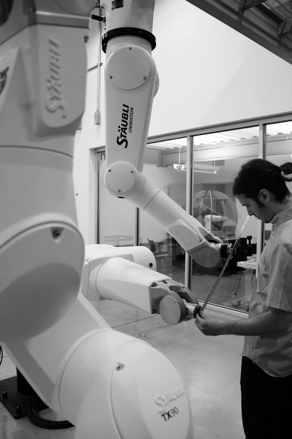
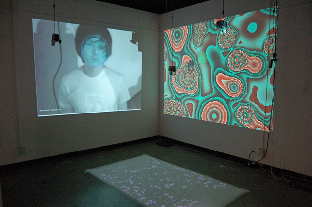
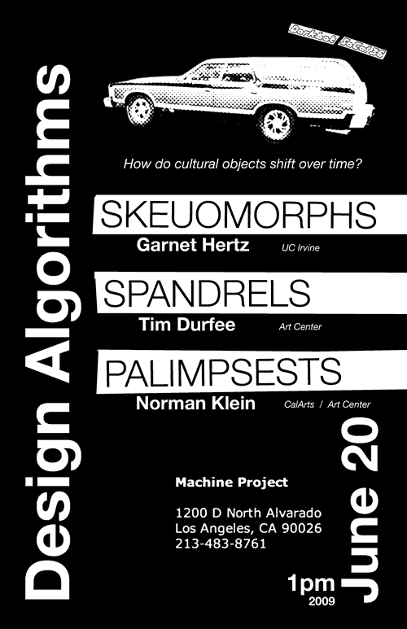

***** Sunday, December 16, 2012
***** 1:00pm-3:00pm
***** Machine Project ***** 1200 D North Alvarado Street ***** Los Angeles, CA 90026
***** Google map of Machine Project
Michael Kontopoulos is an artist-inventor interested in constructing mechanical systems and tools for exploring the poetics of everyday, eccentric human behaviors.His work draws from strategies in speculative fiction in order to investigate the circumstances und
er which people might build custom devices to suite their nuanced needs or respond to various socie
tal failings. Buy constructing electromechanical artifacts and exploring them through video, he tel
ls the story of those people, and the world they inhabit.
Born in Philadelphia, Michael has lived and worked in Philadelphia, Pittsburgh and Los Angeles and has exhibited his work at various galleries, festivals and conferences in the US, Asia and Europe.
An overview of Holography is given with reference to its origins, techniques and methods. The various technical applications of holography and its usage are covered in widely differing areas such as security, the internet, industrial optics and imaging systems. The use of holography as an artists' medium is shown, along with specific examples of holographic artwork.
Joy has previously worked for American Bank Note Holographics in the laser lab, where she produced several well-known images such as the MasterCard hologram, and security holograms for Intel and USPS. After meeting Dinesh Padiyar - a fellow holographer and scientist, they both moved to San Diego and established their own company, Triple Take Holographics, featuring both high-tech applications and commercial uses of holograms.
Aarom was visited in his dorm by the military after building his first robot in college.
Since then, he has launched the Kickstarted projects BlindSide, an audio-only survival/horror adventure game, and
Mr. Ghost an iPhone electromagnetic field (EMF) detector.
Dorkbot SoCal 49
***** Sundary, April 22, 2012
***** 2:00pm
***** ATX Stage (near ATX Kitchen)
***** Atwater Crossing
***** 3245 Casitas Ave
***** Los Angeles, CA 90039
Jay Yan is an artist from Los Angeles focusing mostly on interactive projections in relations to architectural form. He did his studies at
UCLA's Design|Media Art and his work has been shown all over the world from Den Haag to Sao Paulo.
He will talk about his current and past works involving interactive projections and projection art in relations to architecture.
Electronic artist and fabricator Rob Ray has spent the last nine years integrating and
maintaining alternative energy technologies for electronic artworks in the extreme
climate of the militarized salt flats of Wendover, Utah. His projects have included
the circuitry and power generation of a radio tower designed and built by Deborah
Stratman, a push-button system for film projection and viewing, and interpretive
audio kiosks for the Center for Land Use Interpretation, in addition to his own
artworks. Rob will present his experiences and research from these projects. Rob
will also explore the technical, fiscal, and creative implications of alternative energy
technologies on sound, video, and interactive artworks.
Chris Reilly is a Los Angeles-based artist, writer, hacker and teacher. He
received his BFA with a focus on New Media from the School of the Art Institute
of Chicago in 2006. Chris is currently employed as a
mobile game developer at 3CD, an author at Lynda.com
and a teaching and research assistant at UCLA's Design| Media Art department.
Since 2003, Chris has shown work in several solo and
group art exhibitions in the US and Europe; he works with modded video games,
virtual/augmented reality, scripting/programming and kinetic sculpture. Chris
wears many hats professionally: mobile game developer; web programmer;
digital fabrication specialist; small business owner; open-source hardware/
software developer. He is the co-creator of the DIYLILCNC project, a free and open-source set of plans for an inexpensive, fully functional 3-axis CNC mill that can be built by an individual with basic shop skills and tool access.
"Norton Sales has been a leading supplier of Aerospace and Industrial
supplies since 1962. Our customers tend to be small shops and
individuals who are looking for very specific, and often hard to find,
parts for rocketry, stunt equipment, movie props and old school
hydraulics."
Long story short: it's an aerospace junk / surplus dealer that is completely surreal. Norton Sales may be of interest to hackers, people interested in aerospace technologies, STS folk, nerds, etc. or just people looking for something random and interesting to do. Unlike many junkyards, there is also no age restriction (like bringing kids) to the place - so feel free to bring kids along if you like.
Come on out, bring some money, your friends and some dirty clothes.
***** Saturday, December 3, 2011
***** 4:00pm
***** SCI-Arc hosts Dorkbot in the Robotics & Simulation Lab
***** 960 East 3rd Street
***** Los Angeles, CA 90013
Introduction by Peter Testa / Devyn Weiser
Demonstration by Brandon Kruysman / Jonathan Proto
SCI-Arc Robotics and Simulation Lab (SRSL), initiated and designed by
faculty members Peter Testa and Devyn Weiser, builds upon the school's
strengths to create a next generation platform for experimentation and
speculation on the future of architecture. Situated conceptually and
physically between studio and shop, school and industry, SRSL is more
than simply a logical progression in digital tooling. The lab offers
the opportunity to develop a unique, institute specific position in
the emerging field of robotics in architecture.

The 1,000 square-foot double height robot cell focuses on multi-robot
collaboration and multi-media simulation using 5 state-of-the-art
Staubli robot systems: (2) RX160, (2) TX90, and (1) TX90L. The
relatively lightweight, six-axis robotic arms are in a range of
positions (floor and ceiling mounted) to create a reconfigurable 3D
work space with many possible applications. The adjacent simulation
lab houses the Staubli TX40 robot where students, along with their
instructors, conduct hands-on training and testing.
***** Sunday, October 16, 2011
***** 1:00pm-3:00pm
***** Machine Project
***** 1200 D North Alvarado Street
***** Los Angeles, CA 90026
***** Google map of Machine Project
Sean Bonner will present Safecast, a global project working to empower people with data, primarily by mapping radiation levels and building a sensor network, enabling people to both contribute and freely use the data collected.
Created 1 week after the 3/11 Japan earthquake, Safecast has deployed 25 mobile, 50 handheld, and 50 static radiation sensors.
Carlyn Maw is a co-founder of Crash Space, a hackerspace in Culver City, CA. Carlyn will describe the Crash Space group project "Store Front Music", which allows people who walk past the hackerspace to interact with a music making machine.
Part sculptor, part engineer, and part choreographer, Jim Jenkins' work primarily features the animation of text and objects to represent a situation or an observation. Inspirations also come from simple movements often found in nature, such as the rhythmic flapping of a bird's wings to the hypnotic swaying of a cat's tail.
Dorkbot SoCal 45 & Book Launch: Xtine Borrough, Jonah Brucker-Cohen, Jeremy Rotsztain
***** TUESDAY, JULY 26th, 2011 ***** 7:00pm ***** Machine Project ***** 1200 D North Alvarado Street ***** Los Angeles, CA 90026 ***** Google map of Machine Project
xtine is a media artist, educator, editor of Net Works: Case Studies
in Web Art and Design (Routledge 2011) and co-author of Digital
Foundations (New Riders/AIGA 2009). Informed by the history of
conceptual art, she uses social networking, databases, search engines,
blogs, and applications in combination with popular sites like
Facebook, YouTube, or Mechanical Turk, to create web communities
promoting interpretation and autonomy. xtine believes art shapes
social experiences by mediating consumer culture with rebellious
practices. As an associate professor of communication at CSUF, shebridges the gap between histories, theories, and production in design
and new media education. Her website is http://missconceptions.net
.
"Net Works: Case Studies in Web Art and Design" offers an inside look into the process of successfully developing thoughtful, innovative digital media. In many practice-based art texts and classrooms, technology is
divorced from the socio-political concerns of those using it. Although there are many resources for media theorists, practice-based students sometimes
find it difficult to engage with a text that fails to relate theoretical concerns to the act of creating. Net Works strives to fill that gap.Using websites as case studies, each chapter introduces a different style of web project--from formalist play to social activism to data visualization--and then includes the artists' or entrepreneurs' reflections o
n the particular challenges and outcomes of developing that web project. Scholarly introductions to each section apply a
theoretical frame for the projects. Beyond project summaries, chapters also include an explanation of the w
ebsites' technological components; historical, cultural, and ethical perspectives; a list of links; key wor
ds; and short online exercises that relate technical skills to individual projects. Combining practical ski
lls for web authoring with critical perspectives on the web, Net Works is ideal for courses in new media design, art, communication, critical studies, media and technology, or popular digital/internet culture.
Jonah Brucker-Cohen is a researcher, artist, and writer. He received his Ph.D. in the Disruptive Design Team of the Networking and Telecommunications Research Group (NTRG), Trinity College Dublin. He is an adjunct assistant professor at Parsons MFA in Design & Technology. He has held a Research Fellow positions at Media Lab Europe and Eyebeam Center for Art and Technology in New York City. His work and thesis focuses on the theme of "Deconstructing Networks" which includes over 77 projects that attempt to critically challenge and subvert accepted perceptions of network interaction and experience. His writing has appeared in numerous international publications including WIRED Magazine, Make Magazine, Neural, Rhizome.org, Art Asia Pacific, Gizmodo and more, and his work has been presented at events and organizations such as DEAF (03,04), Future Everything (2004, 2009), Art Futura (04), SIGGRAPH (00,05),Transmediale (02,04,08), ISEA (02,04,06,09), Institute of Contemporary Art in London (04), Tate Modern (03), Whitney Museum of American Art's ArtPort (03), Ars Electronica (02,04,08), ZKM Museum of Contemporary Art (04-5), Museum of Modern Art (MOMA - NYC)(2008),San Francisco Museum of Modern Art (SFMOMA) (2008), and Palais Du Tokyo, Paris (2009). His work has been reported about in The New York Times, Wired News, Make, El Pais, Gizmodo, Engadget, The Register, Slashdot, The Wire, Rhizome, Crunch Gear, Beyond the Beyond, Neural, Liberation, Village Voice, IEEE Spectrum, The Age, Taschen Books, and more.
Jeremy Rotsztain is a Canadian digital artist who, taking cues from the practice of painting, works with movies, images, and sound as a kind of malleable and expressive material. In his work, popular narratives, pixels, and sound bites are sampled, transformed, re-arranged and composed in an effort to examine the language and patterns of contemporary media and the shared cultural experiences that we have with them. Jeremy writes custom software, enabling him to collect, edit, and compose with his materials in hybrid and unconventional ways that aren't supported by existing commercial software applications. His work has been screened, performed and exhibited at the Cooper Hewitt and the New York Hall of Science in NYC, Urban Screens in Melbourne, Subtle Technologies and InterAccess in Toronto, Electric Fields in Ottawa, SAT in Montreal, and New Forms Festival in Vancouver.
Action Painting is a series of animated digital paintings composed using cinematic gestures from Hollywood action flicks. Moving visual elements from popular action films -- explosions, fistfights, car chases, and gunshots-- are used as compositional material to create works in the style of abstract expressionist painters such as Jackson Pollock. Action Painting brings together the adrenalin-filled culture of action cinema and the formalist canon of modernist painting. It is a line of inquiry into spontaneity and self-expression that contrasts user-generated web 2.0 culture against the work of the genius craftsman -- and reflects cinema's use of violence as pure spectacle.
Dorkbot SoCal 44
***** SUNDAY, June 5, 2011
***** 1:00pm
***** Machine Project
***** 1200 D North Alvarado Street
***** Los Angeles, CA 90026
***** Google map of Machine Project
John Carpenter is an interactive designer and artist who explores complex data and spaces. based in
santa monica, he works for morphosis architects (2005-present) as the visual and interactive desig
ner and teaches media arts at loyola marymount university. john earned his MFA from the department
of design | media arts in the school of the arts and architecture at UCLA (2009) where his thesis w
ork, Shoreline Equivalent: Qualitative Spaces in Interactive Art, used qualitative observations of
sand patterns at the beach to create an immersive, interactive installation that allowed viewers to
explore the fluid, dynamic and emergent nature of the shoreline.
Karl Lautman makes kinetic sculpture. His work, which is in public,
private, and corporate collections and was recently on display at Mindshare
LA, explores the tension between what we want or expect machines to do, and
their often conflicting agenda. He'll be discussing this theme in more
detail, with photos, video, and actual examples of finished and in-process
work. The video of his piece, "Ouroborus"
(pictured), has been viewed more
than 600,000 times on YouTube.
Alex Braidwood will be demonstrating "Noisolation Headphones", an invention for mechanically transforming the relationship between a person and the noise in their environment. Alex Braidwood is a designer and design educator who maintains a
practice centered around a process of play, experimentation and
research through making. Alex's current work explores methods for
transforming the relationship between people and the noise in their
environment. Alex earned his BFA in Graphic Design from the College
for Creative Studies in Detroit, MI and his MFA in Media Design from
the Art Center College of Design in Pasadena, CA.
Dorkbot SoCal 43
***** SUNDAY, February 27, 2011 ***** 1:00pm
***** Machine Project ***** 1200 D North Alvarado Street ***** Los Angeles, CA 90026
***** Google map of Machine Project
Christopher O'Leary is an artist who works across mediums including video, photography, sound and i
nstallation. Utilizing novel lighting and post-production techniques, the creation of his work is t
ightly controlled, enhancing and building upon the performative aspects of his projects. These acti
vities include performance art, computer-vision systems and non-linear videos.
Los Angeles based artist Lewis Keller manipulates frequency, timbre and amplitude via performance,
installation, fabrication and digital media. His work combines sophisticated technology with crude
humble structures, inviting listeners to question their relationships with time, technology, space,
sound and silence. He received his BA from Colorado College and his MFA from CalArts.
Michael Wilson and Chris Weisbart
Michael Wilson and Chris Weisbart of the Natural History Museum
of Los Angeles
will be presenting on the incorporation of DIY and open source
technologies in the museum exhibit world, where the need for
interpretive and educational technology is often not matched by
budgets. The team will present a lecture on projects they havedeveloped for the NHM as well as a current project that Michael and
Chris have been working on in collaboration with students at New
Mexico Highlands University dealing with the Miller-Urey experiment.
Dorkbot SoCal 42: Snowball Blaster Demo in Santa Clarita
This is a special holiday edition of Dorkbot SoCal, held at perhaps the most ambitious light display in Southern California. We'll meet at the driveway of Ric Turner at 7pm on Tuesday December 28th 2010, and he'll demo and explain his latest Christmas Light video game project, Snowball Blaster.
Ric Turner is a former Disney Imagineer who created special effects
for theme park attractions and shows such as Space Mountain, TheHaunted Mansion, and the Finding Nemo Submarine Voyage.
Snowball Blaster Description
Hop in Santa's electric training sled and grab the game controller for an adventure in snowball dodging. Press the left button to move left and the right to move right. Make it past all the snowballs for a big light show! (nobody has made it yet!) Game is easy enough
for kids and challenging for adults... and quite addictive.
Snowball Blaster has 128 channels of Light-o-rama controlled by a PC. The game logic is running on a Basic Stamp which accepts inputs from the player switches and controls the Red Arrows with sold state relays. The BS also sends logic level triggers to the LOR system
for Game start and Crash. The snowballs, scoreboard (and the rest of the light show live
in the LOR program.) There are separate LOR programs for Attract, Crash and Game play. T
he BS knows when the snowballs reach the bottom, and compares that to where it knows the
Arrow is to detect crashes.
The game is designed around the limitation of having very few positions to light up. The timing of when they light up is more versatile, so that's where the game lives. It's easy to learn, starts easy and gets harder pretty quick. The audio is broadcast on FM so people watching in cars get a good show too.
Come on out, and bring your friends and family!
Dorkbot SoCal 41
***** Saturday, October 16, 2010 ***** 1:00pm
***** Machine Project ***** 1200 D North Alvarado Street ***** Los Angeles, CA 9002
6
***** Google map of Machine Project
Undulating Flux is David's first-year project in the Arts Computation Engineering program
at UC Irvine.
The goal of Undulating Flux is to bring the participant into what psychologist Mihalyi Cs
ikszentmihalyi termed a flow state,
described as a state of being wherein action follows upon action according to an internal
logic that seems to need no conscious intervention by the participant.
Undulating Flux explores these questions by setting up a transduction chain wherein a vib
rationist sends intense music and motion-synced vibrations into the participants body.The technology behind this project centers around the Nintendo Wii remote and the Max programming environment. The wiimote data is streamed into Max wherein parameters are set to control the intensity of each vibrator individually. A Max package called Maxuino is used to send the control data to an Arduino microcontroller, which is connected to the motor
s.
Theron Trowbridge - DIY 3D Printing
Theron Trowbridge lives in Los Angeles and manages the digital video encoding department of a Hollywood post production facility. A life-long DIY-er, he is a founding member of CRASH Space, a hackerspace in Los Angeles, where he helped build, maintain, and upgrade multiple MakerBot Cupcake CNCs.
He has also 3D objects for priting and is a regular contributor to Thingiverse.In his spare time, Theron creates and performs weird computer-generated electronic music
under the monicker Bangsplat.
Created by the Nexus group, The PyroSphere is a 22 ft diameter geodesic sphere, elevated on five 15 ft legs
for a total hieght of 37 ft. The sphere itself has 92 flame effect valves,
each located at one of the sphere's 92 vertices, which emits a 3 to 4 ft fire ball, controlled individually by a microcontroller.
Dorkbot SoCal 40
***** Saturday, May 22, 2010 ***** 1:00pm
***** Machine Project
***** 1200 D North Alvarado Street ***** Los Angeles, CA 90026
***** Google map of Machine Project
Come celebrate Dorkbot SoCal's 40th event this Saturday - with Rube
Goldberg machines and hackerspaces. Presenters include:
Local hackerspaces will be showcased, with presentations about their
capabilities, membership, culture, and recent projects, including
Crashspace in Culver City
represented by R. Kevin Nelson, and Nullspace
in downtown LA represented by M.
Dorkbot SoCal 39
***** Saturday, March 20, 2010
***** 1:00pm
***** Machine Project
***** 1200 D North Alvarado Street ***** Los Angeles, CA 90026
***** Google map of Machine Project
"ATLAS in silico" is the result of a vibrant collaboration between artists and scientists spanning new media, computer science, metagenomics, biology, and engineering.
Ruth West is an artist with background as a molecular genetics researcher. She is Director, Interactive Technologies for CENS (Center for Embedded Networked Sensing) on the UCLA campus and is concurrently an Artist-Research Associate at the UCSD Center for Research in Computing and the Arts, where she is the first CALIT2 New Media Artist crossing over to the Digitally Enabled Genomic Medicine Layer.
Todd Margolis is currently the Technical Director of the Center for Research in Computing and the Arts (CRCA) at UCSD. In 2004, he received his MFA in Electronic Visualization from the Electronic Visualization Laboratory at the University of Illinois at Chicago. He is a founding member of the immersive and interactive art and technology non-profit organization, Applied Interactives, and also a member of the art collaborative Sine::apsis Experiments.
Joachim Gossmann is an audiocentric media artist interested in a true interdisciplinary discourse between science and the senses. He is currently working on a PhD in Computer Music at the Center for Research and Computing in the Arts at U. C. San Diego.
He also holds a a Tonmeister degree from University of the Arts, Berlin, a MFA in Composition/Experimental Sound Practices from the Californian Institute of the Arts, and has 6 years of professional experience in research, production and development of music in experimental media working at Fraunhofer IMK and the Center for Arts and Media Technology in Karlsruhe, Germany.
MluM http://mlum.com
MLuM is a Long Beach and Singapore based punceptual histriophonic art ensemble, comprised of multi-national artists whose creato-researchive interests include: The utilization and/or incorporation of scientific, scientistic and pseudo-scientific technologies, methodologies, idealogies and procedures in(to) aesthetic and artistic processes and practices; The aesthetics of sustainability; Sustainability as artistic tradition and genre; The geographics of social networking pertaining to the environmentics of location and mindset; Performance orientations relative to interactive systems within improvisational structures and environments; Charting influence within the aesthetic-ismos.
Always in search of collaborators, MLuM will deliver a paper (presented at MUSICACOUSTICA, Beijing) entitled "Databasethetics."
Dorkbot SoCal 38
***** Saturday, October 31, 2009
***** 1:00pm
***** Machine Project
Micha Cárdenas - Lecturer, Visual Arts Department, UCSD // Artist/R
esearcher, Experimental Game Lab and b.a.n.g. lab Chris Head - MFA Candidate UCSD // Artist/Researcher, Experimental Game La
b and b.a.n.g. lab Elle Mehrmand - MFA Candidate UCSD // Musician, Assembly of Mazes // Artis
t/Researcher, b.a.n.g. lab http://va-grad.ucsd.edu/~drupa
l/node/918
The Freephone is an art project that aims to provide people just deported
from the US with a free phone call. To achieve this, a group of UCSD
MFA students and graduates came together to
present the phone at the Lui Velazquez gallery in Tijuana, just a few feet
from the turnstiles where people who are deported are dropped off by the
border patrol. The project is by Chris Head, Micha Cárdenas, Elle Mehrmand
,
Katherine Sweetman, Felipe Zuñiga and Camilo Ontiveros
The Freephone is an effort to use new media performance art or performance
with technology to make the experience that people who are deported from
the US a little bit less difficult. To make the phone, the artists bought
a non working payphone casing from Ebay.com, wired it to a new $10 phone
from a store and hooked that up to an adapter which would allow the phone
to make calls over the internet. Then, the phone was installed outside of
the Lui Velazquez gallery and the artists invited people coming through the
turnstiles at the border to make a free phone call.
Leaving No trace, the Parkfield Interventional EQ Fieldwork (PIEQF)
was a geologically interactive machine earthwork temporarily installed
in the remote township of Parkfield, Central California during the
summer of 02008. This time-sharing, performance earthwork merged
together the micro-seismic resonance of geological time and the
autonomous operation of a ready-made, modified machine, producing an
immersive, digitally mapped 21st century machine earthwork action.
Owen Gerst is engaged in the process of architecture, but casts aside the
title of architect. He is a representative of ideas, and draws a distinction
between building and architecture. Building serves basic raw needs.
Architecture is about something - an IDEA. It is the IDEA that, through the
creative process, serves as the catalyst in a process of transformation -
turning the very basic into something special, unique, and magnificent.
The IDEA is the essence of architecture, and it is the IDEA that Gerst is
interested in - the IDEA in all its forms and methods of representation.
Dorkbot SoCal 37
*****
Saturday, July 11, 2009
***** 1:00pm
*****
Machine Project ***** 1200 D North Alvarado Street
*****
Los Angeles, CA 90026
***** Google map of Machine Project
Heather Knighthttp://www.marilynmonrobot.com/
A newbie Angelino and recent alumnus from the Personal Robots Group at
the MIT Media Lab, Heather is a Social Roboticist who works at the
Jet Propulsion Lab. She has two degrees from MIT in Electrical
Engineering and Computer Science and a minor in Mechanical
Engineering, working in Robotics since 2002 under Professor Cynthia
Breazeal. This dorkbot she will present her work enabling robots to
understand nonverbal human gestures and talk about the potentials for
interactive technology incorporated into everyday objects, such as
clothing.
Jody Zellen http://www.jodyzellen.com/
Jody Zellen is an artist living in Los Angeles, California. She works in many media simultaneously making photographs, installations, net art, public art, as well as artists' books that explore the subject of the urban environment. She employs media-generated representations of contemporary and historic cities as raw material for aesthetic and social investigations.
Xuan "Sean" Li http://www.way2sky.com/portfolio/
Xuan "Sean" Li creates works that merge concepts and ideas from different
disciplines into new digital and electronic expression. He has worked
in the areas of web design, game level design, product design, and 3D
rendering and animation. His most recent work attempts to expand the
role of information visualization as an art form through a novel
combination of physical sensors with generative visuals, exploring
new aesthetic possibilities by expressing the nature of the
wireless data flow.

Dorkbot SoCal 36
*****
Saturday, June 20, 2009 ***** 1:00pm
*****
Machine Project ***** 1200 D North Alvarado Street
*****
Los Angeles, CA 90026
***** Google map of Machine Project

DESIGN ALGORITHMS: SKEUOMORPHS, SPANDRELS & PALIMPSESTS
This event will explore how cultural objects shift over time, with
each presenter exploring a single term related to patterns of cultural
change.
Skeuomorphs - Garnet Hertz - UC Irvine "An ornament or design on an object copied from a form of the object
when made from another material or by other techniques"
Garnet Hertz is an interdisciplinary artist, Fulbright Scholar and
is an affiliate
of the Laboratory for Ubiquitous Computing and Interaction in the
Department of Informatics at UC Irvine. He has
shown his work at several notable international venues in eleven
countries including Ars Electronica, DEAF and SIGGRAPH and was awarded
the prestigious 2008 Oscar Signorini Award in robotics. His research is
widely cited in academic publications, and popular press on his workhas disseminated through 25 countries including The New York Times,
Wired, The Washington Post, NPR, USA Today, NBC, CBS, TV Tokyo and CNN
Headline News.
Spandrels - Tim Durfee - Art Center "The roughly triangular space between the left or right exterior curve
of an arch and the rectangular framework surrounding it"
Tim Durfee is an architect based in Los Angeles. His independent and
collaborative work has produced buildings, exhibitions, temporary
installations, furniture, urban sign systems, interfaces, videos, and
maps.
He is a partner of the Los Angeles office Durfee | Regn and teaches at
Art Center College of Design in the Graduate Media Design Program. He
was director of the Visual Studies Program at the Southern California
Institute of Architecture (SCI-Arc), and recently completed a Visiting
Professorship at Woodbury University.
Current projects include several houses, a penthouse loft and rooftop
in downtown LA, signs for the Gallery Row district in Los Angeles, and
a museum on the history of transportation in Los Angeles near the Port
of Los Angeles. With Durfee Regn Sandhaus (DRS), Tim Durfee has also
created award-winning exhibitions for museums across the country.
Palimpsests - Norman Klein - CalArts / Art Center "A manuscript, typically of papyrus or parchment, that has been
written on more than once, with the earlier writing incompletely
erased and often legible."
Norman Klein is a cultural critic, and both an urban and media
historian, as well as a novelist. His books include "The History of
Forgetting: Los Angeles and the Erasure of Memory," "Seven Minutes:The Life and Death of the American Animated Cartoon," the
data/cinematic novel, "Bleeding Through: Layers of Los Angeles,
1920-86" (DVD-ROM with book), "The Vatican to
Vegas: The History of Special Effects", "Freud in Coney Island," and the forthcoming "The Imaginary 20th Century." His essays
appear in anthologies, museum catalogs, newspapers, scholarly
journals, on the web -- symptoms of a polymath's career, from European
cultural history to animation and architectural studies, to LA
studies, to fiction, media design and documentary film. His work
(including museum shows) centers on the relationship between
collective memory and power, from special effects to cinema to digital
theory, usually set in urban spaces; and often on the thin line
between fact and fiction; about erasure, forgetting, scripted spaces,
the social imaginary.
Dorkbot SoCal 35
*****
Sunday, May 17, 2009 ***** 1:00pm
*****
Machine Project ***** 1200 D North Alvarado Street *****
Los Angeles, CA 90026
***** Google map of Machine Project
John Arroyo http://www.remixin.com/
John is a composer, producer and DJ and is involved with an iterative remix project
called Remixin.
He will discus how music changes as it is iteratively remixed, which he calls "remi
x evolution".
Video by Doug Welch
Jeremy Douglass http://www.playpower.org
People need affordable learning games. Worldwide, 4.1 billion people earn under
$3,000 per year, meaning that even a $100 computer is often out of reach for the
world's emerging middle class. Playpower is targeting a $10 platform
based on the 8-bit 6502 microprocessor that makes
learning games affordable for "the other 90%." Playpower designs highquality learning games, conducts field trials to confirm that they
work, and fosters collaborations between game designers, cognitive scientists
and NGOs.
Video by Doug Welch
*****
Sunday, March 8, 2009
***** 1:00pm [warning: first day daylight savings time!]
*****
Machine Project ***** 1200 D North Alvarado Street
*****
Los Angeles, CA 90026
***** Google map of Machine Project
Presenters will include:
Dan Goods http://directedplay.com
Dan is the "Visual Strategist" for NASA's Jet Propulsion Laboratory at
CalTech where he develops creative ways of communicating science.
He recently has done artwork with aerogel and on a team to develop a
108-foot long data driven sculpture at the San Jose airport.
Eric Gradman and Brent Bushnell http://mindshare.la/labs/
Eric and Brent will present ArtFall: a dynamic physical simulation by drawing on a whiteboard.
Brian O'Connor
Arduino + Chumby = Fun!: The Chumby is an open-source, ambient Internet device
running Linux while the Arduino is an open-source prototyping platform.
Brian will show how to connect an Arduino to the Chumby and develop a simple
application that monitors the environment.
Dorkbot SoCal 33 - Aschheimm, Evans, Guttman
*****
Saturday, January 10, 2009
***** 1:00pm
*****
Machine Project ***** 1200 D North Alvarado Street
*****
Los Angeles, CA 90026
***** Google map of Machine Project
Deborah Aschheim creates works that blur biology and technology, exploring
concepts of memory, architecture, and neural networks through drawings,
sculpture, writing, installation and sounds.
Brian Evans explores the intersection between reductivist sculptural form
and the aesthetics of behavior, where structure and thought are fused.
He creates simple moving objects with seemingly life-like qualities -
electromechanical life forms with motivations only just beyond our
understanding.
David Guttman creates interactive works that generate unique colors and shapes fr
om sound and EEG.
Dorkbot SoCal 32 - World Power Systems Lab Sale
*****
Saturday, November 1, 2008
***** 12:00pm - 3:00pm
*****
World Power Systems
*****
2360 Allesandro Street
*****
Los Angeles, CA 90039
***** Google map
Tom Jennings is clearing out his
studio, and selling a pile of his stuff... and we're making an event out of
it. Come out to look around, have some kosher or tofu hot dogs.
Cold-war stuff for sale: Nixies! Antique computing! Wind-up tape machines! Transi
stors older than you! Gyroscopes! Flip-dot displays! Nixie assemblies! One-plane
numeric displays! Radiation detectors! New (in 1950) aluminum project cabinets! W
eird knobs! dials! switches! Old (nice!) radios! Ancient (working!) oscilloscopes
! Bubble [magnetic] memory! Tiny cathode ray tubes! Weird instrumentation!
Dorkbot SoCal 31 - "Nerd Droid", univac, Mack
*****
Saturday, September 27, 2008
***** 1:00pm
*****
Machine Project ***** 1200 D North Alvarado Street
*****
Los Angeles, CA 90026
***** Google map of Machine Project
*****
Saturday, July 26, 2008
***** 1:00pm
*****
Machine Project
*****
1200 D North Alvarado Street
*****
Los Angeles, CA
***** Google map of Machine Project
Presenters:
Steven Gentner
Steven Gentner will be speaking about a
robot project built using RoboRealm,
a powerful free computer vision
based application for use in machine vision, image analysis, and image
processing systems.
Through careful social conditioning, the mind is guided to think
within certain patterns. Gil Kuno tries to redirect the flow of the
mind outside of the set patterns we are taught by society to
construct. Most of his works displace natural activity from its
context, revealing an otherwise hidden level of metaphorical absurdity
within the ordinary patterns present before our eyes. Much of his work
revolves around the experience of sound. Gil Kuno is based in Tokyo
and Los Angeles.
Brett Doar is a "paratechnologist"
who creates "idiosyncratic electro-mechanical creatures out of
inappropriate materials."
Dorkbot SoCal 29 - Make:Way Team gets 33rd Place
*****
Thursday, May 29, 2008
***** 8:00pm
*****
Machine Project
*****
1200 D North Alvarado Street
*****Los Angeles, CA
***** Google map of Machine
Hear the gut-wrenching tale of four plucky men and a crappy car who made a fooli
sh fantasy into a foolish reality!
Earlier this year, Make: magazine agreed to sponsor Jason Torchinsky in fielding an entry into the 2008 24 Hours of Lemons motor race: an endurance race for cars valued at $500 or less. Jason gathered the best people in the field of enough free time and some interest in ra
cing a shitbox: Tom Jennings, Brett Doar, and Sloan Fader. A 1993 Ford Escort LX
was purchased for $300, and the work began.
In the end, The Make:Way car came in 33rd out of nearly 90 entries-- a far bette
r result than ever hoped for. Come see what the team did, how they did it, and s
ee the 33rd-place-winning car itself!
*****
Saturday, April 5, 2008
***** 1:00pm - 3:00pm
*****
Machine Project
*****
1200 D North Alvarado Street
*****
Los Angeles, CA
***** Google map of Machine
Guest hosted by Thomas Edwards, former Dorkbot Seattle overlord.
Damon Seeley and partner Cameron McNall are Electroland, a team
that creates large-scale public art projects and electronic installations.
Each project is site-specific and may employ a broad range of media,
including light, sound, images, motion, architecture and interactivity.
Electroland is working at the forefront of new technologies to create
interactive experiences where visitors can interact with buildings,
spaces and each other in new and exciting ways.
Thomas Edwards is a technology artist who is a recent transplant
from Washington, DC (where he co-founded Dorkbot DC).
He will be presenting "Phy2Phy", his campaign to link physical
objects to other physical objects using the Interent. Phy2Phy
concentrates on de-localization of interaction through the use of
affordable hardware devices, and parallels the displacement of
his own recent transcontinental journey.
Gilad works to explore the intersection between culture, technology
and spatial design, made possible through new media. What gets
him excited is finding ways to create and use technology as a tool
to strengthen connections between people and to places. He builds
objects and designs spaces that take advantage of embedded
technology as a way to augment their base line functionality.
= Make:Way Design Briefing =
Also, the Make Magazine 24 Hours of LeMons race car project will be giving a short presentation to describe how you can be involved and get a project in Make Magazine.
Make:Way is Make Magazine's entry into the 2008 24 Hours of LeMons race -- an endurance race where each car must be $500 or less. The Make:Way team will be transforming a $300 1993 Ford Escort LX into a screaming brute of a racecar. See how we do it!
We need individuals to produce side projects for inside the car, that will include, but not limited to:
Nixie tube (or other grabby display) gas gauge (A/D then display)
In-car video, in-car audio
Car-to-pitstop driver communication
Car telemetry (data capture in moving car, transmit to pit)
This will be at minimum a "side bar" project in Make: Magazine, so you could get a nice write up and be on the team, etc. Come on Saturday and check it out.
Tom's Place
2350 Allesandro Street
Los Angeles, 90039
(at the corner of Whitmore)
(Google Maps)
Make:Way is Make: Magazine's entry into the 2008 24 Hours of LeMons race -- an endurance race where each car must be $500 or less. The Make:Way team will be transforming a $300 1993 Ford Escort LX into a screaming brute of a racecar. See how we do it!
Come out on Saturday at 4pm to see the car, meet the crew, and hang out. We will be wanting someone to produce side projects for inside
the car, that will include, but not limited to:
Nixie tube (or other grabby display) gas gauge (A/D then display)
In-car video, in-car audio
Car-to-pitstop driver communication
Car telemetry (data capture in moving car, transmit to pit)
This will be at minimum a "side bar" project in Make: Magazine, so
you could get a nice write up and be on the team, etc. C'mon out on Saturday and check it out.
I know you've seen them out of the corner of your eye. I've been watching them too. They do geeky dinners in LA.
We've teamed up with Heather Vescent and Mark Allen of Machine Project to put together the January LA Geek Dinner / Dorkbot SoCal blind date. Basically that means, we're having nice food at Machine with the LA Geek Dinner folks.
Since this is a first date, be sure to bring stuff to show off. And you can bring a present for the white elephant exchange (something geeky, not more than $15).
Dinner will be about $15
RSVP for this event is required. Please state whether you are attending or not at http://upcoming.yahoo.com/event/389862/. If you RSVP, you must show up, or pay for your no-show. We're getting some classy catering!
Today's digital cameras have a limited dynamic range compared to
film. If you shoot a photo of a landscape with a beautiful cloudy
sky, your landscape will be properly exposed, but your clouds will be
washed out or vice-versa. High-Dynamic Range photography allows you
to circumvent your sensor's limitations by taking multiple photos with
different exposures and combining them on your computer. All you
need is a camera capable of manual exposure settings, a tripod and a
computer and you'll be on your way to HDR mastery.
Dave Bullock (eecue) is the offspring of a photographer and a programmer. He
has been sifting through bits on the internet since he was young and
along the way has taught himself programming, unix and photography.
Dave is a frequent contributor to WIRED News and a member of the San Bernardino Sheriff's Search and Rescue Team. When he's not
shooting photo of geeky stuff around Los Angeles, you can usually find
him crawling through a cave, out in the desert or rescuing a wayward
hiker.
Rama will present a range of projects, including videos of mechnical and
robotic sculptures, self-organizing systems and systems for knowledge
organization. Themes will include the relationship between physical
(embodied) and non-physical (mental) activity, knowledge representation,
and systems of belief. The relationship of these projects to the
interdisciplinary questions raised by intelligent systems will be
introduced with the intention of engaging in an open discussion.
Rama Hoetzlein completed a BA in Computer Science, a BFA in Fine Arts
from Cornell University in 2001 with thesis works in robotic sculpture.
From 2002 to 2004, he co-founded the Game Design Initiative at Cornell
University (GDIAC) in 2001, with David Schwartz, to support
interdisciplinary education among artists and engineers. In 2007, Rama
completed an MS with the Media Arts & Technology Program (MAT) at UC
Santa Barbara in the area of knowledge organization, and is currently
doing research in artificial intelligence and computer graphics.
Professor Barry Hertz will be presenting on the development of ultra-fuel-efficient vehicles developed from 1980 to 1988 at the University of Saskatchewan, Canada. The distinctions held by the U of S engineers include winning every SAE Supermileage event entered during nine successive years, breaking three amateur world records, and shattering the absolute world fuel economy record on May 29, 1986 with a vehicle that got 4,738 miles per US gallon (5691 MPIG, 49.6 mL/100 km).
Barry Hertz specializes in Vehicle Research, Machine Design, Manufacturing, and Mechanical Tribology, with current and past projects including:
1. Vehicular transportation efficiency,
2. Vehicle aerodynamics,
3. Wind tunnel testing,
4. Machine Design: Automotive Vehicles,
5. Mechanical Tribology: Friction, Lubrication, & Wear,
6. Alternative Fuels and Lubricants,
7. Bio-Diesel Engine Wear Research.
In conjunction with Dorkbot Socal, I will be throwing open the doors to Hooptyrides, Inc. but space is limited. Attendance will be restricted to the first thirty respondents per Dorkbot instructional internet presence (Link). One lucky attendee will leave with a door prize/boat anchor which will be won through a rousing round of Rock, Paper, Scissors. The contest portion of the evening will be officiated by Echo Park superhero, Mark Allen (Link). Mark doesn't know that he will be performing in this capacity, so if you happen to see him, please urge him to attend. Perhaps you should suggest that he bring a whistle.
What can you expect?
Demonstration of Mister Jalopy's Urban Guerrilla Movie House
Demonstration of the Giant Ipod
Demonstration of Boombox TV, as featured in upcoming Make article Platform:Boombox
Tour of Hooptyrides, Inc.
Tour of Hooptyrides, Inc. executive restroom reserved for those donating $5 (or more) to Machine Project (Link)
Live demonstration of Mister Jalopy's Four-Step Miracle Process for the Refurbishment of Wood as we transform crummy Delco console into something slightly less crummy. (No photos or videos, please. Some miracles need to be witnessed, not recorded.)
Ample opportunities to be separated from your money
You may ask, why do I have to win that console?
When I built the Giant Ipod, I had purchased/found three consoles as I was not sure which would work for my purposes. This is #2 of the three. If I find the 3rd, which is pretty likely, there may be two door prizes! What a lucky day that will be!
Daisy Odell, a mechanical engineer that is constantly demanding to pick up random appliances/furniture on discarded on the side of the road. To see his 4 step miracle process would be a life changing event.
Mark Frauenfelder is editor-in-chief of Make magazine and co-editor of Boing Boing. He has been spotted on the Colbert Report.
Matt Ashton needs the inspiration to get off his ass and
finally start tackling some of his dreams.
Dave Bullock, aka eecue, covering this event for Wired.
Dorkbot SoCal 23 - Excursion to Norton Sales - Saturday May 5th 2007
[ S P E C S ]
*** May 5th 2007, 1pm
***
*** [meeting at 1pm, and leaving at 1:10pm]
*** Machine Project
*** 1200 D North Alvarado Street
*** Los Angeles, CA 90026
*** http://www.machineproject.com
***
*** [ending up at, at around 1:30pm]
*** Norton Sales inc.
*** 7429 Laurel Canyon Blvd
*** North Hollywood, CA 91605
***
*** Online Map from Machine to Norton or as a Nice PDF file.
Meet at Machine Project @ 1pm. We will be driving up to Norton at 1:10pm sharp. Maps will be left at Machine to help get you there. Alternately, you can just meet up at Norton at around 1:30pm. Note that the store closes at 3pm.
The goal of this event is this: get to Norton, buy something, and make something interesting with it in the month ahead. Bring it back to the next Dorkbot SoCal event, and the best object wins a free copy of the beautifully produced Machine Project Almanac v1.1, featuring a bunch of previous events. If you're better at photography or some other alternate skill, you're also welcome to take photos, document yourself at Norton doing something, etc. and also present it - anything goes.
Norton Sales has been a leading supplier of Aerospace and Industrial supplies since 1962. Our customers tend to be small shops and individuals who are looking for very specific, and often hard to find, parts for rocketry, stunt equipment, movie props and old school hydraulics.
Dorkbot SoCal 22 - 3D/Stereo Imaging - Saturday March 10th 2007 at 1pm at Machine Project
[ S P E C S ]
*** March 10th 2007, 1pm
*** Machine Project
*** 1200 D North Alvarado Street
*** Los Angeles, CA 90026
*** http://www.machineproject.com
[ D O R K B O T I N 3 D ]
This event will be on the theme of 3D imaging technologies and systems, and it's been in the making for a number of months. The event - organized with the help of Eric Kurland - will showcase some devices that have been informally demo'd at previous events, and also have presentations by two respected pioneers in 3D/stereo imaging technologies: Ray Zone and John A. Rupkalvis.
Come on out and bring your friends - seating is limited, and we'll be projecting/demonstrating in 3D: we'll be handing out stereo glasses to folks in the crowd... so come early. We will have some incredible hardware on site, too. Personally, I've seen Ray Zone recently present at USC: it was interesting, articulate and intelligent.
[ P R E S E N T E R S ]
Eric Kurland is an award winning filmmaker and digital artist whose films have played in festivals around the world. He also runs the Hollywood Mobile Movie, which presents guerrilla drive-in movies around Los Angeles. He is currently working on several independent stereoscopic projects and has hacked together various rigs for shooting and displaying 3-D video.
Ray Zone is a widely published author and speaker whose articles have appeared in the Los Angeles Times, American Cinematographer, and The Hollywood Reporter. A 3-D film producer and an award-winning 3-D artist and photographer, Zone has produced or published over 130 3-D comic books and created stereoscopic images for more than two decades.
John A. Rupkalvis is currently CEO of StereoScope International, which he founded in 1972, and Vice President of StereoMed, Inc., which he co-founded in 1978. He has served numerous clients in the motion picture and television industries, offering extremely experienced consultation on stereoscopic (three dimensional, or "3-D") imaging acquisition and display for producers and exhibitors. His extensive background has included serving as stereographer on over a dozen 3-D features and other productions, and he has designed and developed numerous stereoscopic systems and devices.
Contact Garnet Hertz if you are interested in giving a presentation at
an upcoming Dorkbot SoCal event.
* PLEASE REDISTRIBUTE THIS ANNOUNCEMENT *
Dorkbot SoCal 21: Dorkbake Contest
Feb 3rd 2007, in the evening (Saturday)
Machine Project
[ S P E C S ]
*** Feb 3rd 2007, in the evening (Saturday) - exact time of bakeoff TBA
*** Machine Project
*** 1200 D North Alvarado Street
*** Los Angeles, CA 90026
*** http://www.machineproject.com
1. We are inviting teams or individuals to construct small baking ovens using only the heat of a 100-watt incandescent bulb.
2. The makers of said ovens shall compete in a public bake-off with said ovens on the evening of Feb 3rd. Ingredients will be provided to all competitors at the event.
3. Winners shall be judged on engineering, aesthetics and tastiness. Prizes include subscriptions to MAKE and CRAFT, a free class at Machine, electronic kits and other goodies.
4. The name Easy-Bake Oven is property of Hasbro and shall not be mentioned again. Except for here: I think you should get bonus points if you can exactly replicate this picture - but I technically have nothing to do with scoring of this contest.
Contact Garnet Hertz if you are interested in giving a presentation at
an upcoming Dorkbot SoCal event.
* PLEASE REDISTRIBUTE THIS ANNOUNCEMENT *
Dorkbot SoCal 20: Laminar Sciences, Open Hack, with Dorkbake Contest Announcement / Registration
Jan 6th 2007, 1pm (Saturday)
Machine Project
[ S P E C S ]
*** Jan 6th 2007, 1pm (Saturday)
*** Machine Project
*** 1200 D North Alvarado Street
*** Los Angeles, CA 90026
*** http://www.machineproject.com
[ S C H E D U L E ]
We'll start this event with a demo by Bob Blackstock from Laminar Sciences Corporation: he'll be bringing and demoing some patent-pending "streaming birefringence" devices that produce extraordinarily interesting and colorful flow visualizations. It's like a combination of kaleidoscope, Etch-a-Sketch, and Lava Lamp with swirling colors spontaneously appear then disappear. Bob is exploring aesthetic and technical applications for these devices, including flow visualization for fluid mechanics and aerodynamics. See http://www.laminarsciences.com/id11.html for videos of this gear in action.
After Bob's demo, we'll be breaking into an "Open Hack": bring your scrap junk, ideas, in-progress devices, and completed projects. We'll bring out the tables and tools and hack away and chat for about an hour.
At the end of the event, we'll be announcing and taking registrations for our "Dorkbake" contest. Basically, people can register in the contest to have a month to build an oven using only a 100 watt incandescent for heat. The event finale is a cook off to be held on February 3rd 2007, where contestants are judged on flavor, engineering and aesthetics. Make Magazine and Craft are giving away subscriptions, Machine Project is giving away a free class or two, and some books. There may even be more prizes. Mark Frauenfelder and Carla Sinclair (Make and Craft editors) are going to judge. Other impressive judges are in the works. Contest details will be announced at the event.
And, as if this wasn't enough encouragement, the winner of the contest will also win a photo of their project in the beautiful hardcopy of Make magazine.
So, come on out... and bring your friends, gear, and ideas.
Contact Garnet Hertz if you are interested in giving a presentation at
an upcoming Dorkbot SoCal event.
* PLEASE REDISTRIBUTE THIS ANNOUNCEMENT *
Dorkbot SoCal 19: Make Magazine Issue #8 Launch Party
December 2nd 2006, 5:30pm (Saturday)
Machine Project
[ S P E C S ]
*** December 2nd 2006, 5:30pm (Saturday)
*** Machine Project
*** 1200 D North Alvarado Street
*** Los Angeles, CA 90026
*** http://www.machineproject.com
Please join us Saturday Dec 2nd at 5:30pm for a very special event with Machine Project to launch the new issue of MAKE Magazine.
Simon Penny (Director of UCI’s Arts Computation Engineering program) will speak on integrating interaction design, space design, structure design, mechanical design, electronic design and software engineering using his 3D machine-vision driven interactive digital-video project Fugitive 2 as a case study. Attention will then turn to the pragmatic design and fabrication issues involved in building a custom motion control rig for the video projector in the project. Simon is bringing in a prototype of the motion control rig as tangible example.
Mr Jalopy (Contributing Editor to MAKE and automotive mad scientist) will be giving an epic (yet fast paced) talk on “Deep Sea Suburbs: Custom Vans, Internal Combustion Engines, Backyard Anthropology and the California Dream”.
There is a high probability of free beer and pretzels
—————
[ A L S O ]
In conjunction with the Make #8 launch party, Machine Project is offering a workshop on solar powered eletronics
Introduction to Solar Robotics
Dec 3rd, 11am to 7pm (12-1 lunch break)
$95 all materials and a free issue of Make #8 included. Registration and more information.
Space is limited to 10 people. Register early to avoid disappointment.
Contact Garnet Hertz if you are interested in giving a presentation at
an upcoming Dorkbot SoCal event.
* PLEASE REDISTRIBUTE THIS ANNOUNCEMENT *
Dorkbot SoCal 18: Trip to Apex Electronic Surplus
November 4th 2006, 1pm (Saturday)
Machine Project
[ S P E C S ]
*** November 4th 2006 - 1pm (Saturday)
*** Meet at Machine Project at 1pm, leaving at 1:15pm for Apex
*** 1200 D North Alvarado Street
*** Los Angeles, CA 90026
*** http://www.machineproject.com
*** Arriving at Apex Electronics at around 1:45pm
*** 8909 San Fernando Road
*** Sun Valley, CA. 91352
*** http://www.apexelectronic.com/
[ O V E R V I E W ]
This event will be a "field trip" to Apex Electronic Surplus. Tom Jennings knows the place well, and will be our unofficial guide. Apex has 10,000 square feet of unusual, unique and hard to find items: it's got all of the usual surplus items as well as helicopter cockpits, missiles, and odd scientific and industrial equipment.
Come on out, bring your friends and some cash - you won't forget this one. (And in case you end up climbing around the junkpile, bring some decent shoes and some clothes that might get dirty.)
Driving directions from Machine to Apex:
1. Start at 1200 N ALVARADO ST, LOS ANGELES going toward RESERVOIR ST - go 0.4 mi
2. Bear Left on GLENDALE BLVD - go 0.6 mi
3. GLENDALE BLVD becomes CA-2 NORTH - go 0.5 mi
4. Take the I-5 exit toward SACRAMENTO - go 11.9 mi
5. Take the PENROSE ST exit - go 0.2 mi
6. Turn Left on PENROSE ST - go 0.2 mi
7. Turn Right on SAN FERNANDO RD - go 0.6 mi
8. Arrive at 8909 SAN FERNANDO RD, SUN VALLEY, on the Left. Here is a picture of the Apex storefront.
Special thanks to Tom Jennings for helping with this event. Contact Garnet Hertz if you are interested in giving a presentation at
an upcoming Dorkbot SoCal event.
* PLEASE REDISTRIBUTE THIS ANNOUNCEMENT *
Dorkbot SoCal 17: Stefanac, de Fren, Elliott
October 7th 2006, 4pm (Saturday)
Machine Project
[ S P E C S ]
*** October 7th 2006 - 4pm (Saturday, but not at the usual 1pm time)
*** Machine Project
*** 1200 D North Alvarado Street
*** Los Angeles, CA 90026
*** http://www.machineproject.com
[ O V E R V I E W ]
This event will feature Suzanne Stefanac, Allison de Fren and Greg Elliott. Suzanne Stefanac will be starting off the event: she recently moved to LA to direct the Digital Content Lab at the American Film Institute, one of the country's
leading R&D Labs for digital content. Allison de Fren will take us on a journey of technosexuality through the screening of her film work which explores the quest to manufacture the perfect woman in both the robotics and sex industries. Lastly, Greg Elliott will show his project, PersonalSoundtrack, an iPod/pedometer hybrid that automatically changes audio tempo and track based on your gait.
Come on out, bring your friends - it should be an exceptional event. NOTE: This event will feature sexually graphic material.
After abandoning her first career as a chemist, Suzanne Stefanac wrote about technology and its social and business implications for more than fifteen years and published in Wired, Macworld, Salon, PC World, Publish, New Media, San Francisco Chronicle, California Lawyer, and Rolling Stone, among others.
With the emergence of the web, Stefanac was founding editor of Macworld Online, overseeing technology, creative, editorial, and business aspects. She was an executive producer for The Site, an hour-long, nightly program about technology that launched on MSNBC. She co-founded RespondTV, an interactive television infrastructure company, where she served as senior vice president for creative and production, overseeing applications for clients such as Coca-Cola, Ford, American Airlines, Purina, Comedy Central, and PBS.
More recently, she has provided strategic consulting for a variety of efforts. She designed and built a website for General Wesley Clark’s PAC and oversaw a website in seven languages for Quincy Jones’ We Are the Future project. Stefanac conceived and built a website for Macarthur Fellow and American Book awardee Guillermo Gómez-Peña. She has served as a mentor with the American Film Institute’s Digital Content Labs for the past eight years. She was a session chair at DUX2005.
Allison de Fren will take us on an exploration of technosexuality through the screening of her documentary short, ASFR, which focuses on an internet community of robot fetishists.
Allison de Fren is a digital media maker who creates both linear and interactive work. She is currently in postproduction on a feature-length documentary entitled 'The Mechanical Bride,' which explores the quest to manufacture the perfect
woman (in both the robotics and sex industries).She has taught and written about technology in its relationship to the body, and she has worked as an interaction designer and consultant for companies such as Voyager, Starwave, and Interval Research. She has a masters degree from the Interactive Telecommunications Program at NYU's Tisch School of the Arts and is currently a doctoral candidate in the School of Cinema-Television at the University of Southern California.
PersonalSoundtrack, a tiny wearable computer, detects your walking or running speed and plays songs from your music library that match your pace. Song speed is adjusted in real-time to match subtle variations in your gait, while larger, deliberate pace changes cause the device to change songs. You simply put it on and begin moving; that's it.
Most computational devices require the user to adapt to the machine. PersonalSoundtrack offers, instead, a symbiotic relationship: both human and machine actively adapt to each other in real-time. The 'interface' is one's natural gait. There is no optimal or pre-defined experience, encouraging meandering, wasting time, and loitering.
Special thanks to Tom Jennings for helping with this event. Contact Garnet Hertz if you are interested in giving a presentation at
an upcoming Dorkbot SoCal event.
* PLEASE REDISTRIBUTE THIS ANNOUNCEMENT *
DORKBOTSOCAL16 - SPECIAL EVENT
Machine Project Aug 12th 2006, 8pm (Saturday) Make Magazine Issue 7 Release Party
[ S P E C S ]
*** Aug 12th 2006 - 8pm (Saturday, but not at the usual 1pm time)
*** Machine Project
*** 1200 D North Alvarado Street
*** Los Angeles, CA 90026
*** http://www.machineproject.com
[ O V E R V I E W ]
This will be a special event presented by Dorkbot SoCal & Machine Project: Make Magazine's Issue 7 Release Party. Jed Berk will be there to talk about autonomous flocking behaviour in robotic blimps, Make editor and internet superstar Mark Frauenfelder will be there to introduce the new issue and chat with you about general makery, and Issue 7 (Back Yard Biology) will be there for you to peruse and purchase, which includes an article on making a home mushroom growing lab by our friend Phil Ross.
*** July 2nd 2006 - 1pm (SUNDAY - not Saturday)
*** Machine Project
*** 1200 D North Alvarado Street
*** Los Angeles, CA 90026
*** http://www.machineproject.com
[ O V E R V I E W ]
This will be an "open hack", and will be a repeat of our highly
successful May "electronic disassembly" event where people brought a
variety of electronic devices to rip apart while chatting. Come on
out and bring in something that you've never seen the insides of: an
old VCR, toaster, alarm clock, keyboard, camera or a piece of
industrial surplus. If you've never taken anything apart, don't be
intimidated: this activity is for both newbies and experienced folks.
To help rip apart your electronics, you're also welcome to bring some
of your own tools in case things get busy and the "house" tools get
monopolized.
Please note that this event will be held on SUNDAY, not Saturday (as usual).
In addition to your objects of deconstruction, Tom Jennings will give
a demo of http://wps.com/projects/MP3-system/index.html - a computer
music system for his 1970 AMC Hornet. This is an linux-based MP3
player operated by 2 knobs and 2 switches, with no visible computer
controls.
If you have your own projects to demo, bring them out too.
So, come on out on Sunday... bring your ideas and something to rip
apart. The last event like this was a lot of fun: hope to see you
there!
Contact Garnet Hertz if you are interested in giving a presentation at
an upcoming Dorkbotsocal event.
LOST? If you're completely lost, you can always call nine-four-nine-291-5666.
* PLEASE REDISTRIBUTE THIS ANNOUNCEMENT *
DORKBOTSOCAL14
Machine Project June 3rd 2006, 1pm
Coniglio, Silbert, Kurt
"Un-everyday Environments"
*** June 3rd 2006 - 1pm (Saturday)
*** Machine Project
*** 1200 D North Alvarado Street
*** Los Angeles, CA 90026
*** http://www.machineproject.com
--
[ O V E R V I E W ]
This event, in "Dorkbot-ish" fashion, is a diverse blend of three presentations that all relate to inhabited environments: but in a completely different realm than Bed Bath & Beyond. Samuel Coniglio, Vice President of the Space Tourism Society, will show us products he's designed for life in space: including, of course, a zero-gravity martini glass. Jennifer Silbert, an L.A.-based architect, will bring us into the interesting world of designing and working with highly original custom architectural materials. Lastly, Tod E. Kurt will bring an entourage of Roomba robotic vacuum cleaners and show us how to modify them to play music and do other unexpected things.
So, come on out and bring your friends. As with all events, this is free of charge. If you would like to make a donation to our kind venue-host (Machine Project), bring some dollar bills and watch them get sucked up in the money-sucking-machine. Also, most lecture events are filled to capacity, so if you want a chair, it might be a good idea to come at 12:50.
Samuel Coniglio is photographer, designer and promoter for the space tourism industry. His photographs document the evolution of the private space industry, focusing on the pioneers and their vehicles. In 2004, he photographed the historic flights of Space Ship One, the world's first successful private spaceship. He designs robots and other products specifically for the zero gravity lifestyle. Samuel is Vice President of the Space Tourism Society, which promotes the nascent space tourism industry, and a member of the Space Frontier Foundation, which promotes free trade in orbit. Since 1997, he has presented papers, run conferences and conducted seminars on space tourism in the USA, Great Britain, and Germany.
Jennifer will present on the technology and process of designing new materials for architectural projects. One project is the renovation of the Lincoln Center for the Performing Arts - Alice Tully Hall - in New York. This project features translucent wood panels that are 2" thick to meet the acoustic requirements of the concert hall. In addition, the panels have complex curves, meaning that the material must also be heat-formable. The research and development of this material took over 3 months of testing various adhesion and lamination techniques. This presentation will provide an overview of the digital data modelling, structural design, hardware design, prototyping, fabrication and assembly of the project. Jennifer Silbert is a practicing architect in Los Angeles and a graduate of the Yale School of Architecture.
Tod will show how a Roomba can be a MIDI synth or make room-sized Spirographs, as well as demonstrate what a good platform for robotics experimentation the Roomba has become. The cheap hardware and software needed to hack a Roomba will be shown and discussed. Tod E. Kurt is the author of the upcoming book "Hacking Roomba". He has engineered the hardware and software for robotic camera systems that went to Mars. He was a founding developer and systems architect of Overture Systems, née GoTo.com, later sold to Yahoo. Now as co- creator of ThingM.com, he's designing sketchable hardware and networked portable objects. He has degrees in Electrical Engineering from Caltech and Physics from Occidental College. His robotics hacking began at the age twelve when he took apart his BigTrak, RC car, and chemistry set box to build an upright programmable robot.
------
[ M O R E _ I N F O R M A T I O N ]
The next Dorkbot SoCal event will be held on Saturday July 1st 2006 at 1pm at Machine Project. This will be an "open hack" event with another disassembly workshop: the last one was very cool, informative and social. We will also have an update from "Ro Bo" about his wearable computing project introduced at the end of May's event.
Please contact Garnet Hertz if you are interested in giving a presentation at an upcoming DORKBOTSOCAL event.
LOST? If you're completely lost, call nine-four-nine-291-5666 on the day of the event for directions.
* PLEASE REDISTRIBUTE THIS ANNOUNCEMENT *
DORKBOTSOCAL13
Machine Project May 6th 2006, 1pm
"Open Hack" Event
(with Jennings "Electronic Disassembly" workshop and Hart " Southern California Science Cafe" presentation)
[ S P E C S ]
*** May 6th 2006 - 1pm (Saturday)
*** Machine Project
*** 1200 D North Alvarado Street
*** Los Angeles, CA 90026
*** http://www.machineproject.com
[ O V E R V I E W ]
This will be the third "open hack" event, with a workshop/activity in the disassembly of an electronic device. In other words, come on out and bring something interesting to rip apart: Tom Jennings will provide an overview of some disassembly issues and get us all rolling. Bring in something that you've never seen the insides of: an old VCR, toaster, alarm clock, keyboard, camera or a piece of industrial surplus. If you've never taken anything apart, don't be intimidated: this activity is for both newbies and experienced folks. To help rip apart your electronics, you're also welcome to bring some of your own tools in case things get busy and the "house" tools get monopolized.
In addition to your objects of deconstruction, you are also invited to bring your latest prototypes, napkin sketches, and items to get technical help or conceptual feedback on. This has been an increasingly fruitful part of the open hack events as people become more comfortable to share their ideas and projects.
We will also be featuring a short presentation by Brian Hart, the director of the Southern California Science Cafe - a relatively laid-back forum for scientists to give informal presentations about fresh-from-the-lab discoveries. It looks like a very interesting project, and it will be good to hear more about what Brian's been up to.
So, come on out on Saturday... bring your latest project/idea and something to rip apart. It's shaping up to be a great event - hope to see you there.
Contact Garnet Hertz if you are interested in giving a presentation at
an upcoming Dorkbotsocal event.
LOST? If you're completely lost, you can always call nine-four-nine-291-5666.
DORKBOTSOCAL12
Machine Project April 1st 2006, 1pm
Dagett,
Spellman/Stow, Lew
"Visualizing the Invisible"
*** April 1st 2006 - 1pm (Saturday)
*** Machine Project
*** 1200 D North Alvarado Street
*** Los Angeles, CA 90026
*** http://www.machineproject.com
--
[ O V E R V I E W ]
If a theme for this event had to be chosen, I'd pick "Making the
Invisible Visible". This month's event will feature a good variety of
work from a number of different angles: social software, locative
media and digital cinema. Mark Daggett, most well-known (perhaps) as
being part of the Radical Software Group that won a Golden Nica at Ars
Electronica 2002, will be presenting "Balance Bar" - a browser
extension programmed to allow any user to editorialize any web page
anywhere on the Internet. Naomi Spellman & Brandon Stow from 34 North
118 West will be showing "Interpretive Engine for Various Places on
Earth", a system that uses outdoor wireless network connections to
design a custom-built narrative specific to geographical location,
including factors like weather conditions, the physical environment,
nearby locales, and historic events. Michael Lew will also be
presenting: he's a media artist and research engineer that primarily
works on expanding cinema, and has a background in electrical
engineering, artificial intelligence, performance and filmmaking.
Come on out - bring your friends. This event is free of charge. If
you would like to make a donation to our kind venue-host (Machine
Project), bring some dollar bills and watch them get sucked up in the
money-sucking-machine. Also, the last number of lecture events have
been filled to over-capacity, so if you want a chair, it might be a
good idea to come at 12:50.
"In my artwork, I primarily make tools for use by others. The tools that
I create are computer applications, which are commonly referred to as "social
software" or "art applications". My ongoing social software research
is in the area of "independent interfaces," a term I coined to
describe my artistic production and academic research. (The term also
is the title of my related book project.) Independent interfaces are
artistic augmentations to conventional technology that help people
understand how social software can alter their lives in positive and
not-so-positive ways. My interfaces are developed to illuminate and
measure the often-elusive effects of social software on our culture.
A good example of my work in social software is an on-going project
called the "Balance Bar" (http://www.collcoll.com/balancebar/). The
"Balance Bar" is a simple browser extension programmed to allow any
user to editorialize any web page anywhere on the Internet. The
"Balance Bar" will literally insert your comments/article/rant
directly onto whatever web page you would like to expound on. The
"Balance Bar" was developed to address the increasing need to
"balance" the one-sided and isolated worldview that much of our media
sources produce."
Mark Daggett is an artist and programmer, whose work has been shown in
museums, festivals and exhibitions around the world. His work has
shown in the Whitney Museum, the Princeton Museum, P.S. 1, the Ars
Electronica Festival in Linz, Austria, and the Transmediale festival
in Berlin, to name a few. As a member of Radical Software Group, he
was part of a team that won a Golden Nica award for the project
Carnivore at the 2002 Ars Electronica Festival. Daggett have been
nominated for several prestigious awards, including a 2006 Rockefeller
New Media Grant, and a Webby Award, which is sometimes called the
Oscars of the Internet. Major media sources have covered Daggett's
work, including the New York Times, Le Monde, WIRED Magazine and
Surface Magazine. He is presently Creative Manager for Revver a Social
Software company based in Hollywood.
--
34 North 118 West
Naomi Spellman & Brandon Stow
"Interpretive Engine for Various Places on Earth" http://www.34n118w.net/
Naomi Spellman and Brandon Stow will discuss The Interpretive Engine
for Various Places on Earth, a project with Jeff Knowlton. A work in
progress, this generative narrative relies on outdoor wireless
Internet connection to tell a story specific to user location. Data
such as weather conditions, the physical environment, nearby locales,
historic events all specific to the current location and time are
retrieved from online sources and fed into a scripted story structure.
The negotiation of remote databases uncovers larger issues of social
control and power among governmental, commercial, and academic
interests.
34 North 118 West is a southern California based collective focusing
on site specific experimental works utilizing digital media,
computation, and internet resources. Through telecommunications and
mapping tools, one of their concerns is to expose or call to light the
debate around control of and access to information. Their work has
been shown at Futuresonic <4> (Manchester, UK), the LA Freewaves
Festival (Los Angeles), and the Art in Motion in Festival (Los
Angeles). The "interpretive engine" will be shown in the Fresno
Metropolitan Museum's Off-site series, June - August 2006. Naomi,
Jeff, and Brandon are affiliated with the Interdisciplinary Computing
Arts Program at UC San Diego.
"I will be presenting some ongoing research project about "Human
behaviour control". Combining the electronic art attempts of tapping
into the nervous/muscular system (roachbot, Stelarc, Artifacial
expression) and the influence of video game control into live
interactive entertainment, I will present a project where live actors
can be controlled by the audience. It's better than Office Voodoo, the
Sims or reality TV. After a background talk surveying the field, I
will present a demo with live actors of my work-in-progress
prototype."
Michael Lew is a media artist and research engineer, with backgrounds
in electrical engineering, artificial intelligence, performance and
filmmaking. From 2001-2004, he was a Research Fellow at the MIT Media
Lab Europe in Dublin, Ireland, investigating what happens to the film
form when the medium becomes computational. Michael's interactive film
installations and live experimental videos have been shown in
electronic art festivals across Europe and the US. Michael obtained
his M.Sc. in Electrical Engineering from the Swiss Federal Institute
of Technology (EPFL), with a masters thesis on software agents from
the AI Lab, Motorola Labs in Paris, France, for which he was awarded
the Logitech 2000 prize. In 97-98, he was developing architectures for
MPEG-2 video streaming at the Technion Institute of Technology, Haifa,
Israel.
Please contact Garnet Hertz if you are interested in giving a
presentation at an upcoming DORKBOTSOCAL event.
LOST? If you're completely lost, call nine-four-nine-291-5666 on the
day of the event for directions.
* PLEASE REDISTRIBUTE THIS ANNOUNCEMENT *
DORKBOTSOCAL11
Machine Project March 4th 2006, 1pm
"Open Hack" Event (with Hertz "how to solder" workshop)
[ S P E C S ]
*** March 4th 2006 - 1pm (Saturday)
*** Machine Project
*** 1200 D North Alvarado Street
*** Los Angeles, CA 90026
*** http://www.machineproject.com
[ O V E R V I E W ]
This will be the second "open hack" event, with an added bonus: come
on out for a "how to solder" demo by Garnet Hertz.
The "open demo" is an opportunity for you to bring projects that
you've been working on and to get technical or conceptual feedback on
them. During the last open hack event we had a number of folks bring
out completed projects, project ideas, and specific technical
questions. We're looking for more of the same: this should be a good
time to bring works in progress, get feedback/help, and see what
others are doing.
The "how to solder" portion of the event will be an instructional demo
that will be catered toward people that are beginning with
electronics: Garnet will be showing the basics of soldering. The
tools and supplies for this workshop will be provided... and is free
of charge.
So: grab your stuff, tools, sketches, ideas and friends and come on
out on Saturday March 4th at 1pm to Machine Project.
[ P R E S E N T E R S ]
You, your rude-gesture-traffic-signal-device, your robot figure made
from MHz CPU speed indicator LEDs, a big motor that you want to use in
your next project, or your talking-streetcorner-post glove. (These
were all projects brought to the last event.) And your best friends.
LOST? If you're completely lost, you can always call nine-four-nine-291-5666.
* PLEASE REDISTRIBUTE THIS ANNOUNCEMENT *
DORKBOTSOCAL10 - Machine Project Feb 4th 2006, 1pm: Reas / Khan / Dockray
[ S P E C S ]
*** February 4th 2006 - 1pm (Saturday)
*** Machine Project
*** 1200 D North Alvarado Street
*** Los Angeles, CA 90026
*** http://www.machineproject.com
--
[ O V E R V I E W ]
This event will focus on how Processing - an open source programming
language and environment for people who want to work with images,
animation, and sound - can be used to interact and control electronics
and other physical devices. Two physical computing initiatives related
to Processing will be presented: Osman Khan
will explore the Arduino project
and Sean Dockray
will present the Wiring project. In addition,
some recent Arduino/Wiring projects developed at UCLA will be
demonstrated.
------
[ P R E S E N T E R S ]
The event will begin with an introduction by Casey Reas
, co-initiator of the Processing project. Casey will introduce the project that was
co-developed with Ben Fry from ideas explored in
the Aesthetics and Computation Group at the MIT Media Lab and recently
won a Golden Nica award at Prix Ars Electronica 2005.
Osman Khan will be giving a presentation and lecture on Arduino
http://arduino.berlios.de/. Arduino is an open-source physical
computing platform based on a simple I/O board and a development
environment that implements the Processing/Wiring language. Arduino
can be used to develop stand-alone interactive objects or can be
connected to software on your computer (e.g. Flash, Processing,
MaxMSP). The Arduino board is inexpensive and easily assembled by
hand. This provides a cheap and easy way to get started learning how
to assemble circuits. Osman Khan is an artist interested in using
technology to construct engines that help create artifacts for social
criticism and aesthetic expression. His work explores certain themes
to see how technology fabricates as well as subverts our understanding
of identity, communication, and public space through interactive
installations and site-specific interventions. His work has been shown
at Ars Electronica, Linz, Austria, Beyond Media Festival, Florence,
Italy; UC Santa Barbara, USA; LALALA Westweek, Pacific Design Center
in Los Angeles, USA; nano, LACMALab, Los Angeles, USA; telic gallery,
Los Angeles, USA; Dangerous Curve, Los Angeles, USA; bank, Los
Angeles, USA. Osman received his MFA from UCLA's Department of Design
| Media Arts.
Sean Dockray will be giving an overview and demonstration of the
Wiring platform http://wiring.org.co/. Wiring is a physical
computing platform with a sophisticated I/O board and a development
environment utilizing a Processing style language for programming
microcontrollers. Sean Dockray is an artist whose practice follows
from research into social systems and events. He is a founder of the
Los Angeles chapter of the Institute for Advanced Architecture; a
producer of Building Sound, an internet radio program about
architecture; and has worked with the Center for Land Use
Interpretation on their Land Use Database. Dockray received a BSE from
Princeton University in Civil Engineering and Architecture in 1999 and
completed coursework towards an MFA in Critical Studies from the
California Institute of the Arts in 2002. His individual and
collaborative work has been shown at the Telic Gallery (Los Angeles),
the Turtle Bay Museum (Redding), Basekamp Gallery (Philadelphia), Oni
Gallery (Boston), Marcuse Gallery (San Diego), Contemporary Artists
Center (North Adams), LeRoy Neiman Gallery (New York), and the
Storefront for Art and Architecture (New York).
--
Arduino/Wiring Projects from UCLA
This portion of the event will include quick presentations of some of
the best projects built in a recent class by Sean Dockray and a
workshop by Tom Igoe of NYU. These demos involve the creation of
electronic instruments build for performance and small boxes imbued
with behavior. All projects sense some aspect of its environment (e.g.
light, distance, orientation, touch) and have a physical output (e.g.
light, sound, motion). Each project uses an Arduino or Wiring boards
as a software control system for mapping the input to the output. A
variety of sensors have been explored: orientation, tilt,
acceleration, light, sound, IR and sonar distance, RFID, etc. A
variety of different actuators have been used: solenoid, step, DC, and
servo.
------
[ M O R E _ I N F O R M A T I O N ]
Please contact Garnet Hertz if you are interested in giving a
presentation at an upcoming DORKBOTSOCAL event.
LOST? If you're completely lost, call nine-four-nine-291-5666 on the
day of the event for directions.
* PLEASE REDISTRIBUTE THIS ANNOUNCEMENT *
DORKBOTSOCAL9
Machine Project Jan 7th 2006, 1pm
"Open Hack" Event
[ S P E C S ]
*** January 7th 2006 - 1pm (Saturday)
*** Machine Project
*** 1200 D North Alvarado Street
*** Los Angeles, CA 90026
*** http://www.machineproject.com
[ O V E R V I E W ]
After a short hiatus, Dorkbot-socal is revived with a new
home, a new time, and new structure - and a new twist for January: we're trying out a free-form "open hack" concept for the entire event. To get more hands-on-hacking going on, every 2nd
month (starting in January) will be a "bring your project and work on it"
event, featuring semi-regular appearances by the guru Tom Jennings http://wps.com,
the svelte Mark Allen http://markallen.com/ and grubby old me,
Garnet Hertz http://conceptlab.com.
This should be a good time to bring works in progress, get feedback/help,
and see what others are doing. I think this will also be a good opportunity to scout out neat stuff for future (more formal) presentations for upcoming events.
So: grab your stuff, tools, sketches, ideas and friends and come on out on Saturday Jan 7th at 1pm at Machine Project.
[ R E V I V A L _ N O T E S ]
We're meeting on Saturday afternoons (at 1pm) now, which will hopefully
make it easier for people to come to events. To keep things consistent
(and MapQuesting confusion to a minimum) we're going to hold the events at
a regular location over the next while: Machine Project Gallery, a perfect
match for Dorkbot. The 3-presentations/demo events will occur every 2nd month (feb, april, june, aug, oct, dec) and odd-numbered months (jan, march, may, july, sept, nov) will be in an open hack/lab/studio (aka "opendork") format. these events are built for people to just bring their projects-in-progress, work on them, get feedback/help, and discuss.
a rough schedule for 2006 is as follows:
DORKBOTSOCAL9 - Jan 7th 2006 1pm - Machine Project - Open Hack
DORKBOTSOCAL14 - Jun 3rd 2006 1pm - Presenters TBA
DORKBOTSOCAL15 - Jul 1st 2006 1pm - Open Hack
DORKBOTSOCAL16 - Aug 5th 2006 1pm - Presenters TBA
DORKBOTSOCAL17 - Sep 2nd 2006 1pm - Open Hack
DORKBOTSOCAL18 - Oct 7th 2006 1pm - Presenters TBA
DORKBOTSOCAL19 - Nov 4th 2006 1pm - Open Hack
DORKBOTSOCAL20 - Dec 2nd 2006 1pm - Presenters TBA
all dates, times, locations and everything is subject to change.
[ P R E S E N T E R S ]
You, your soldering iron, hacked together automobile, laser-scanning vegetable peeler, paper tape talking machine or massively multiplayer game intervention. And your best friends.
Contact Garnet Hertz if you are interested in giving a
presentation at an upcoming Dorkbotsocal event.
LOST? If you're completely lost, you can always call Garnet at
nine-four-nine-291-5666.
* PLEASE REDISTRIBUTE THIS ANNOUNCEMENT *
DORKBOTSOCAL8
Machine Project Dec 3rd 2005, 1pm:
Bleecker/Brinson, Stearns, Johnson
[ S P E C S ]
*** December 3rd 2005 - 1pm (Saturday)
*** Machine Project
*** 1200 D North Alvarado Street
*** Los Angeles, CA 90026
*** http://www.machineproject.com
[ O V E R V I E W ]
After a short hiatus, Dorkbot-socal is revived with a new
home, a new time, and new structure - and some great
presentations/demos for December! Come out to the event at
1pm on Saturday the 3rd. I say this every time, but this one
should be extra-good. Seriously: read the descriptions below,
and I'll see you there.
[ R E V I V A L _ N O T E S ]
We're meeting on Saturday afternoons (at 1pm) now, which will hopefully
make it easier for people to come to events. To keep things consistent
(and MapQuesting confusion to a minimum) we're going to hold the events at
a regular location over the next while: Machine Project Gallery, a perfect
match for Dorkbot. Also, to get more hands-on-hacking going on, every 2nd
month (starting in January) will be a "bring your project and work on it"
event, featuring semi-regular appearances by the guru Tom Jennings http://wps.com,
the svelte Mark Allen http://markallen.com/ and grubby old me,
Garnet Hertz http://conceptlab.com.
This should be a good time to bring works in progress, get feedback/help,
and see what others are doing. More info about this will be explained on
the 3rd.
We're developing a new kind of game experience using outdoor
viewable mobile devices that anticipate the near-future of
pervasive electronic gaming. These devices range in size from
about that of a tiny laptop, to the size of a small book. We
then configure these portable mobile devices with a GPS sensor
that measure your location in the real world, and orientation
sensors that can tell precisely where you're looking. This
combination makes for designs that represent a true innovation
in game play. Vis-a-Vis Games is an enterprise of the Mobile
and Pervasive Lab at the University of Southern California.
//--------------------
Phil Stearns: TI99/4a Circuit Bending
Through "circuit bending" and creative analog to digital
switching, I've managed to turn a friendly TI99/4a computer (c
1981) into a pixel-spewing entity that likes to feed on sound
waves and spit out garbled, colorful, and highly pixelated
images in realtime. The device was born out of a desire to
explore the artistic possibilities of what happens when our
discarded technology is forcefully but carefully coaxed into
modes of failure.
Jay Mark Johnson will be presenting a robotic camera with a
spherical lens that takes High Dynamic Range images and
converts them to lighting rigs to be used in 3D applications
for image based rendering. He also has some "top secret" stuff
he's doing with the camera, which he may be talking about.
He's worked on a pile of movies, including "A Day Withought a
Mexican", "Nomad", "The Matrix" and "Titanic".
Mark Allen and Dan Novy helped to oranize the event.
And Garnet Hertz, too.
Contact Garnet Hertz if you are interested in giving a
presentation at an upcoming Dorkbotsocal event.
LOST? If you're completely lost, you can always call Garnet at
nine-four-nine-291-5666.
DORKBOTSOCAL7
04-March-2005 - UCSB
Novak / Black / Overholt
[ S P E C S ]
*** MARCH 4th 2005 - 8pm (Friday)
*** University of California Santa Barbara
*** 6020 Humanities and Social Sciences Building, McCune Conference room
*** http://www.aw.id.ucsb.edu/maps.html
***
Map to event
[ O V E R V I E W ]
After much planning, Dorkbotsocal will finally be held in Santa
Barbara. DORKBOTSOCAL7 will take place on Friday, March 4th at 8pm
at UCSB. In conjunction with the "Calculating Images" conference at
UCSB (), Marcos Novak will
open the evening with a talk entitled "Transvergent Beauty:
Computation and Alloaesthetics". For those of you who haven't heard
Marcos talk, you're in for a treat. After that, we'll reconvene in
another room (Arts 2220) to hear August Black and Dan Overholt
present. August Black has worked on numerous international
projects, and will share some of his work with us. Dan Overholt
will close off the evening with a presentation entitled
"Re-inventing the Orchestra: HCI in music performance" in which he
will demonstrate some captivating gestural interfaces for electronic
music. If you're interested in architecture or audio, this event is
for you: come on out and see beautiful Santa Barbara.
[ P R E S E N T E R S ]
//--------------------
Marcos Novak (UCSB/Los Angeles): "Transvergent Beauty: Computation
and
Alloaesthetics" http://www.centrifuge.org/
Marcos Novak is a pioneer in the field of virtual architecture. In
the mid 90s, his contribution to International architectural
discourse was further expanded by the coining and definition of the
term "Transarchitectures". His approach: "we conceive
algorithmically (morphogenesis); we model numerically (rapid
prototyping); we build robotically (new tectonics); we inhabit
interactively (intelligent space); we telecommunicate instantly
(pantopicon); we are informed immersively (liquid architectures); we
socialise nonlocally (nonlocal public domain); we evert virtuality
(transarchitectures)." He has also posited a new "Soft Babylon," a
theoretical stance which posits that our digitized architectural
palette is causing us to create a wired Situationist city, while we
struggle with some of the massive paradigm shifts that our era will
and must face. Whilst articulating highly fluent theory, he has
practiced, producing beautiful ethereal architectures that flux and
shimmer as his algorithms run their designed logics. He received the
Masters of Architecture at Ohio State university in 1983. Since that
time he has taught at Ohio State, University of Texas Austin, the
Architecture program at UCLA, the Digital Media program at UCLA, Art
Center College of Art & design, Pasadena. He has published, lectured
and exhibited his work internationally.
August Black has an awful habit of calling himself an artist.
Previously, this has meant making marks on paper and later on
canvas. Now, this means almost anything concerning material,
concept, and form. His research is based in the overlap of media
(both digital and analogue, electronic and mechanical), focusing
mostly on the kinds of audiences that are created and induced by
emerging conventions of observation and involvement. He works in
radio, television, software, networks, comics, text, and projected
sound/light. Collaborating with others on various free radio
stations in Austria, he's devised a technique for performing live
radio on a shoestring budget from networked locations outside of the
studio, transforming the location at hand into material and subject
for conceptual play. He is currently an IGERT research fellow at
the University of California Santa Barbara.
In music composition and performance, it has always been important
to use a variety of instruments in order to create interesting sonic
environments. Historically this led to the development of many
different acoustic instruments, but musicians have increasingly been
composing and performing with computers - today, various audio
synthesis techniques are used to generate sound; these synthesis
techniques can be viewed as modern corollaries to the different
orchestral instruments. Moreover, given the flexibility of these
synthesis algorithms, today's virtual instruments are capable of a
much wider range of sound generation than their acoustic
counterparts. However the interfaces used to control these new
sounds are predominantly based on historic instruments such as the
piano (MIDI keyboards), or simply use a standard computer
keyboard/mouse. While such standardized approaches are useful in
some situations, they limit the range of musical expression that our
new orchestra of synthesis techniques potentially offers. Instead of
losing much of the expressiveness and live performance capabilities
of acoustic music, we should extend our methods of sonic control to
a more intricate level by developing gestural interfaces for
electronic music. I have developed several new interfaces with this
goal in mind, and will explain the ideas behind their creation and
demonstrate how they work.
//--------------------
[ M O R E _ I N F O R M A T I O N ]
Directions to DORKBOTSOCAL7 from LA:
1. Take 101 North.
2. Near Goleta, take the 217 west towards UCSB.
3. When the highway ends, take a right on Mesa Road.
4. Go left on Ocean Road. When you get to the traffic circle, veer
right and
continue on Ocean road.
5. At the intersection of El Colegio Road and Ocean, go left. Park
in lot 21.
You will have to buy a permit (bring dollar bills) at one of the
automated
machines. The Calculating Images conference will be in Humanities
and Social
Sciences and the rest of dorkbot will be in Arts 2220.
Ben Ritter, MarkDavid Hosale, John Thompson, Graham Wakefield, and
Carlos
Castellanos helped to oranize the event.
Contact Garnet Hertz if you are interested in giving a presentation
at an upcoming Dorkbotsocal event.
LOST? If you're completely lost, you can always call Garnet at
nine-four-nine-981-6438.
*** DECEMBER 18th 2004 - 8pm (Saturday)
*** Enlighted Designs
*** 163 La Costa Ave, Encinitas CA 92024
*** Map: Mapquest
Link
[ O V E R V I E W ]
We'll be holding the DORKBOTSOCAL6 event at the studio/factory of
Enlighted Designs - designers and builders of
electroluminescent clothing. Janet Hansen, the company founder, will
be
giving us a tour of the place, and may even share the secrets of how
things like this
are manufactured. After
that, Paula Poole & Brett Stalbaum will take control: they'll talk
about
doing arbitrary mapping things with GPS, in their incarnation as
painterflat.net. As a bonus, Brett's also a member of the highly
respected C5 Corporation and is also the
coordinator of the Interdisciplinary Computing and the Arts Major at UC
San Diego... you'll want to hear what he has to say. Lastly, we're
capping
off the evening with a special and wonderfully strange presentation by
Neil Kearns: he supposedly has an RV that he's modified to be driven by
sitting on the roof, and it's outfitted with a bunch of video monitors
playing an obscure synchronized mix of images. We'll put on our
jackets,
head outside, and go inside the darned thing.
Come on out, bring your own "refreshments", egg nog and a couple of
friends - this will be a mind-engaging and memorable event!
Janet Hansen is an artist/engineer/entrepreneur and pioneer in the
field of wearable technology, particularly lighted clothing. Through
her company, Enlighted Designs (http://enlighted.com), she
illuminates all types of apparel, including bras, pants, suits,
dresses, ties and hats. Light elements include LEDs and
electroluminescent (EL) materials, used in conjunction with a variety
of optically transmissive and reflective elements. The lights are
animated in pre-programmed patterns (with PIC-based sequencers), and
some designs incorporate motion-reactive, sound-reactive, or
color-changing effects. At this dorkbot meeting, she will give a
tour of her studio, display examples of lighted clothing, and discuss
the past/present/future of this unusual industry.
Janet's formal training is in engineering, in areas as diverse as
robotics, image processing, semiconductor manufacturing, molecular
biomechanics, and dynamics analysis of aerospace vehicles. She
received a BS in Engineering from Harvey Mudd College of Claremont,
CA, and PhD in Bioengineering from UC San Diego.
Paula Poole and Brett Stalbaum will talk about doing arbitrary mapping
things with GPS, in their incarnation as painterflat.net. Paula and
Brett spend as much time as possible in the Great Basin, performing
their vocational pursuits as artists, as well at their avocational
interests in archeology, geography, geology, natural history, and
low-impact, minimalist camping. The Great Basin provides the immense
scale, subjective context, and open access to remote space that
combines
the above interests into a multiplicity of possible outcomes. The goal
is to conceptually explore in the spaces between disciplines of
interest
to us - for example between database and painting. Brett will also talk
about the other major collaboration he is involved with, C5
corporation,
their stunning recent discovery of the actual physical location(s) of
the Great Wall of California, (the speculative "other" of the Great
Wall
of China), and the potential applications of supercomputing and
database
applications to tell artists where to go.
Neil Kearns is an artist currently specializing in telecast and kinetic
artforms. Under the pseudonym Doktor Random, he will introduce you to
the "Portable Scalable Mirth Module" which promises to increase
awareness of and measurably change your perspectives of the physical
and civil landscape.
Doktor Random is utterly unqualified to do any of this though, holding
little in the way of tangible credentials other than a valid California
Driver's License.
//-------------------------
[ M O R E _ I N F O R M A T I O N ]
Directions:
Enlighted Designs is located at 163 La Costa Ave, Encinitas CA 92024.
This is north of San Diego. From I-5, take the La Costa exit, and go
west, almost all the way to the coast. The house is on the left, on a
private driveway set back from the main road. It is marked by a "Not a
Through Street" sign, just past the construction site with the blue and
white flags. If you go past it, and reach the end of La Costa at Hwy
101,
make a U-turn, go past Vulcan, and then it is the next right. There is
plenty of parking in the driveway and on the private road.
(( The January Dorkbotsocal meeting might be held in Santa Barbara. ))
Contact Garnet Hertz if you are interested in giving a presentation at
an
upcoming Dorkbotsocal event.
LOST?
If you're completely lost, you can always call Garnet at
nine-four-nine-981-6438.
This is going to be an excellent event - and it's not just because I
say
that every time. Casey Reas has organized a cool mix of tactical
media,
GPS, text visualization, connecting expressive environments, and
projections on to the cityscapes of Los Angeles. Investigate the links
below: you'll be thoroughly impressed. As a bonus, it's hosted at Telic
on
Chung King Road in the heart of Chinatown: come on out, tell all your
friends, and be there. You won't want to miss this.
TRACK-THE-TRACKERS is a network installation consisting with mobile
components. The project makes use of existing personal technologies in
conjunction with GPS infrastructure to provide participants with an
audible (not
a visual) experience of the proliferation of video surveillance in the
urban
public sphere. The mobile unit, a bag containing a laptop,
GPS-receiver,
earphones, and a generic mouse is taken on a walk through the city. The
sound in
the headphones changes whenever the participant enters the vicinity of
a
surveillance camera. This effect is not automatic but created by other
participants who are adding new locations to the existing database. The
technology is documented with the intention of inspiring others to
build similar
psychogeographic systems.
Annina Ruest is a Swiss media artist currently based in San Diego. Most
of her
artistic activity so far has taken place within the field of software
art. As
part of the group LAN she co-authored the project tracenoizer.org -
Disinformation on Demand. She is also the author of SuperVillainizer -
Conspiracy Client (supervillainizer.ch), TRACK-THE-TRACKERS---
(t-t-trackers.net) and most recently BUSH BOT 0.4 (bushbot.ath.cx). She
graduated in 2003 from the Department of New Media, Zurich School of
Art and
Design (www.snm-hgkz.ch) and is now a graduate student at the
Department of
Visual Arts at UC San Diego (visarts.ucsd.edu).
Schoenerwissen/OfCD presents their approach of by outlining principles
and methods
they used for recent projects - situating the work with respect to
other related
design strategies. They will focus on their last project txtkit - A
Visual Text
Mining Tool.
Schoenerwissen/OfCD continues its design research on information
architectures, interfaces and visual languages currently at UC Santa
Barbara. In developing new digital tools SW/OfCD provides spatial and
temporal contexts serving as frameworks for exploration and dynamic
decision making. Their project Minitasking - a visual gnutella client
has
been recognized by an Award of Distinction of the Prix Ars Electronica
in
2002 and received the transmediale Software Award in 2003. Their latest
project txtkit - visual text mining tool was supported by the Federal
Ministry for Education and Research (BMB+F) and Lander Ministries for
Education or Science and Culture. In 2004 txtkit has been awarded an
Honorary Mention at Net Vision category of Prix Ars Electronica.
TEMP is a software based network environment for any software capable
of tcp or udp socket communication. TEMP is made for people utilizing
computers and similar devices as a tool for their expression. Where
most
software is developed for specific processes, TEMP interconnects these
environments, and enables collaborations between artists, scientists,
or
researchers from different disciplines without insisting on one
particular
software environment. Time shouldn't be spent on solving technical
issues
but rather on finding communication models to explore the possibilities
of
interactions and interconnections amongst nature, people, and devices.
Andreas Schlegel is a computational designer interested in collecting
data, sensing spaces, exploring communication processes in the fields
of networks. He received a diploma in communications design from Merz
Akademie Stuttgart, Germany, and an MS in Media Arts and technology
from
the University of California, Santa Barabra. He currently lives and
works
in Berlin, Germany.
LIGHT ATTACK is a media artwork, as well as a social experiment, which
takes
place the urban sphere of Los Angeles. While driving through the city,
an
animated virtual character is projected onto the cityscape of L.A.
exploring
three places "to go" and three places "not to go", according to the
popular
Lonely Planet travel guide. Light Attack elaborates the concept of the
"moving
moving" image in the stereotyped neighborhoods of Hollywood, Beverly
Hills,
Santa Monica, Downtown, Watts, and Compton. The virtual character,
projected
from a moving vehicle onto the city facades, reacts to the
architectural context,
and interacts with passers-by while "walking" through the city. The
character's
actions are condensed in a gallery installation, reflecting projection
as an
emergent ubiquitous medium. The piece raises questions about property
and privacy.
How public is public space? How projection, as a medium, changing the
environment
in which we live?
Daniel Sauter is a media artist exploring interactive installations
dealing with time and space relations, cultural implication of
technologies and
site-specific interventions. Currently Sauter is a lecturer at the
Design | Media
Arts department at UCLA. His works have been shown internationally
including
the Ars Electronica Festival 2004, O.K Center for Contemporary Art,
Linz, Austria;
Milia 02 in Cannes, France; International Video Festival in Bochum,
Germany; 6.
International Videofestival in Novi Sad, Serbia and Montenegro,
FILE2002 in Sao
Paulo, Brazil; telic gallery, Los Angeles; LACMALab, Los Angeles;
westweek, Pacific
Design Center in Los Angeles; Europrix Festival in Vienna, Austria;
Leipzig Book
Fair in Leipzig, Germany; werk, bauen + wohnen in Zagreb, Croatia,
Europrix Award,
Lisbon, Portugal. Diploma HfG/ZKM Karlsruhe, Germany; MFA Design |
Media Arts, UCLA.
Honorary Mention Prix Ars Electronica, Interactive Art, 2004; Winner
Europrix
Students' Award, 2001.
From the 110 Freeway (traveling either north or south) take the Hill
St.
Chinatown exit. From downtown drive north on Hill St. to Chung King
Road,
a pedestrian only street parallel to and just west of Hill St. You can
park on Hill St. Enter through the plaza at the pedestrian crossing
halfway between College and Bernard Streets. There is also a parking
lot
at each end of Chung King Rd. Driving in from Hill St. (take the first
driveway on the right after the 110 exit - $2.50/3 hours parking). The
other parking structure is on Bernard Street between Hill St. and
Broadway.
This event has been organized by Casey Reas: http://www.groupc.net/
If you would like to present at future dorkbotsocal events, please
contact
Garnet Hertz at dorkbotsocal at dorkbot dot org.
(( December's dorkbotsocal will likely happen in San Diego. ))
LOST?
If you're completely lost, you can always call Garnet at
nine-four-nine-981-6438.
*** OCTOBER 9th 2004 - 8pm (Saturday)
*** FLASH FILM WORKS
*** 743 Seward Ave., Hollywood, CA 90038
*** Phone Number: 323-468-8855
*** http://www.flashfilmworks.com
[ O V E R V I E W ]
This - I think - will be one of the most exciting DORKBOTSOCALS yet: we're
meeting at Flash Film Works in Hollywood, a motion picture special effects
house. Dan Novy, a dorkbotter and FFW employee, will give us a quick tour
of the facilities. The first presenter will be Spot Draves (down from San
Fransisco) who will be presenting his acclaimed "Electric Sheep". Next,
Doug Goodwin from CalArts will present "Reactive System"; last but not
least, we'll catch Ryan Schoelerman, fresh from performing his "Autonomous
Radiobodies" system on the streets of Los Angeles.
Bring all your friends and beer: prepare to see some great work in an
interesting venue.
[ P R E S E N T E R S ]
DAN NOVY, Flash Film Works Tour
http://www.flashfilmworks.com/
Dan Novy will be presenting a quick "nutz and boltz" walk through of the
process of creating visual effects for motion pictures. Topics will
include 3D model creation and integration into onset footage, image based
lighting, massive distributed rendering, and network issues that arise
from moving immense data sets on a daily basis. Facility tour
included.
Electric Sheep is a distributed screen-saver that harnesses idle computers
into a render farm with the purpose of animating and evolving artificial
life-forms. Each clip of animation has a genetic code, and the collective
voting of users determines its fitness. In the next version a P2P network
distributes the bandwidth of sharing the video and votes.
Spot will show a video documentary explaining the project and answer
questions, then play some new "best of" sheep.
Spot (AKA Scott Draves) is a software artist schooled in computer science
and mathematics and living in the San Francisco Bay Area that produces
visuals by writing software.
The Reactive System is a framework designed to support real-time
interactive art-works involving synthetic actors. RS promotes the
simulation of conversation over limited-bandwidth media including email,
sms texting, IRC chats, faxes, threaded discussions, voicemail and
webcams. RS operates either synchronously or asunchronously, and
maintains emotional state over extended periods of interaction. RS is
modular, so it may facilitate communication with any number of actors and
people, Ultimately it should be possible to assemble a cast of characters
each with their own emotional state and conversational abilities. The
system should be able to interact with any number of peer applications
including other instances of the RS. Equally important is the development
of a persisten emotion engine that could respond to the quality of
interaction.
Doug Goodwin is currently pursuing an MFA degree in Critical
Studies/Integrated Media at the California Institute of the Arts.
Autonomous Radiobodies is a public art performance/installation that
involves people wearing or carrying units equipped with a Radio Graffiti
Device for creating localized radiophonic art/graffiti spaces. The intent
of this project is to create an immediate radio art/public voice space for
listeners by using the mainstream FM broadcast as a background "canvas"
and disrupting it on a localized level with spontaneous short radio burst
interruptions.
Ryan will be presenting three versions of transmitting gear, and will talk
about his goals in the project/performance:
Ryan Schoelerman is a new media artist working in the mediums of
electronic music composition, electronic & robotic design, interactive
installation and tactical media. He as a BA in Media Study from the
University at Buffalo. He is currently studying at the University of
California Irvine in the Art Computation Engineering Graduate Program.
[ M O R E - I N F O R M A T I O N ]
If you need driving directions while coming out to the event, call
323-468-8855 after 7pm. Flash Film Works has two buildings on the
property and we'll be presenting in the UPSTAIRS of the BACK building.
There should be plenty of parking on the street, and people should walk up
the drive way between the two buildings and come into the BACK building.
What appears to be the front door from the street is purely
ornamental.
In the meantime, contact Garnet Hertz at dorkbotsocal [at] dorkbot [dot]
org if you have questions about dorkbotsocal, the event, or life in
general.
*** JULY 4th 2004 - Noon (SUNDAY)
*** KUCI 88.9 FM, UC Irvine (Studios & Outdoor Patio)
*** Hosts: Ryan Schoelerman and Mike Boyle
*** Bring: Audio/Electronic Gear, Noise-Making Machines, Recordings,
Food, Drinks
*** Map:
Mapquest
Map
[ L I V E - E V E N T - F O R M A T ]
We will be meeting on the patio between the KUCI FM
(http://www.kuci.org) headquarters and the Arts Computation Engineering
buildings at UC Irvine at noon on July 4th, 2004. This event is
directly adjacent to the May 2004 DORKBOT-SOCAL event location.
This event will be in in "opendork" format: you are invited to bring
audio equipment, noise-making machines, strange robots, electronic
gear, recordings, and ideas. We will be transmitting live to air for
the duration of the day, and will strive to integrate your ideas and
gear into the mix.
Simultaneously, we'll also be having a BBQ: bring food and drink and be
prepared to socialize, jam, and experiment.
[ L I S T E N - O N L I N E ]
On July 4th 2004, you can listen to us live via the internet and on FM
radio - tune in to catch the event.
MP3 24k: http://kuci.org/mp3stream.m3u
MP3 128k: http://kuci.org/128mp3stream.m3u
RealAudio 24k: http://kuci.org/play.ram
RealAudio 128k: http://kuci.org/play128.ram
FM Radio: 88.9 FM in Southern California
(And available via iTunes as "KUCI" under the category of "Public".)
*** JUNE 5th 2004 - 8pm
(SATURDAY) *** UCLA Design | Media Arts *** Host: Casey Reas
Presentations:
LUCAS KUZMA
The Ecstasy of Communication
A population of sound-making devices interacting with each other and the
sounds in their environment. Using models from computational neuroscience
as a basis, they emulate some of the features of organic neurons as well
as those of artificial neural networks.
Lucas Kuzma is a media artist, musician, programmer, and interaction
designer living in Los Angeles. His personal works utilize generative
systems for the production of aural and visual art, explore the
confluence of sound and space, and examine data mappings between time,
space, and frequency domains. Kuzma holds a BS in Computer Science
and a BA in Philosophy with an Artificial Intelligence minor from Case
Western
Reserve University and is currently pursuing an MFA in Design and Media
Arts at UCLA. http://users.design.ucla.edu/~muzak/thesis/ http://machinatus.net
PAUL YARIN
LTS2000
Laparoscopic surgery is a surgical specialty which involves operating
through
small incisions. The internal organs are seen by inserting a video
laparoscope
through one of the small incisions. The delicate coordination required for
laparoscopic surgery and the high cost of failure demand standardized
training
systems and metrics for laparocopic skills. The ISM60 is an interactive
sensing
module for laparoscopic skill training and measurement. The module is a
rotating sensor carousel with several coordination and knot tying tests.
It
provides
a video overlay with task data, error count, and score. PC software allows
administrative monitoring and logging of these tasks. The ISM60 is
designed
to be mounted in the RealSim LTS2000, an enclosure that simulates the
abdomen. Paul Yarin is a consultant in the fields of interactive media, product
design,
and technology research. His goal is to apply research experience to
making
useful interactive products. Paul studied Mechanical Engineering at
Stanford
University and the University of Pennsylvania; he also attended the
Tangible
Media Group at the MIT Media Lab.http://www.realsimsystems.com http://www.blackdust.com/projects.html
PERRY HOBERMAN
(Topic TBD.)
Perry Hoberman is an installation artist whose work has been exhibited
widely
throughout the United States and worldwide. He works with a variety of
technologies, ranging from utterly obsolete to seasonably
state-of-the-art.
His installation "Timetable" was awarded the Grand Prix at the ICC
Biennale
'99
in Tokyo, and "Systems Maintenance" won a 1999 Prix Ars Electronica "Award
of Distinction"."Unexpected Obstacles", a retrospective survey of his
work,
was
exhibited during summer 1998 at the ZKM Mediamuseum in Karlsruhe, Germany,
and before that at Gallery Otso in Espoo, Finland. Other recent works
include
"ZOMBIAC", exhibited at the Kiasma Museum in Helsinki, and "Workaholic",
shown at the exhibition "Vision Ruhr" in Dortmund, Germany. He is
represented
by Postmasters Gallery in New York and currently teaches at USC. http://www.perryhoberman.com
*** FIRST OFFICIAL DORKBOTSOCAL MEETING
*** MAY 1st 2004 - 8pm - T O D A Y
*** UNIVERSITY OF CALIFORNIA IRVINE, ARTS COMPUTATION ENGINEERING
"BUNKER" Map
Presenters:
Tom Jennings: World Power Systems /
hacker extraordinnaire -
Presenting on "Car Parts and ASCII" - 'I currently I make functional and
complex instrumentation that reveals the beauty hidden within scientific
apparatus of the 1930's through 1950's, a time of unsurpassed social and
scientific change. My work is about the aesthetics of scientific
problem-solving and the obscure traditions of technical design.'
Mark Allen and Sky Frostenson: C-Level - "Waco Ressurrection Project" - C-level
unveils Waco Resurrection, its first
chapter of Endgames, a new 3D multiplayer computer game series based on
alternative utopias and apocalyptic moments.
Beverly Tang: Rhizome.LA / Sublimina - Beverly will present her
sublimina (http://sublimina.com) works and her current preoccupation with
silversmithing and electronic jewelry, which includes a "third eye"
necklace that can sense the invisible.
It should be a good event - the room is small, so come out early if you
want a chair. All are welcome. This event is free. BYOB. A phone number
will
be sent to the mailing list the day of the event to help people
navigate their way here.
a number of folks came out: it was actually a little bit of a shock to
have people (20 or so) appear. from what i can remember, the following
people were there and talking about dorkbotsocal in some form:
beverly tang (rhizome l.a.)
ben benjamin (superbad.com)
mark allen (c-level / machine project)
ryan schoelerman (elintartslab.org)
sky frostenson (illinest.net)
alex "the pink" (la + sd futurists)
peter cho (pcho.net)
andrea, aka tulpje tulp
casey reas (ucla d|ma senselab, processing.org)
garnet hertz (conceptlab.com)
dan novy (flash film works)
and several others...
FOR MORE INFO ON DORKBOTSOCAL, CONTACT GARNET HERTZ AT garnethertz *-at-* gmail *-dot-* com


 a couple of pictures from our first informal get-together can be seen
here:
a couple of pictures from our first informal get-together can be seen
here: {kind=link}
{kind=link}
{kind=link}
{kind=link}
{kind=link}
{kind=link}
{kind=link}
{kind=link}